1MT461 · 6 kreditů · Průběžný test 26. 10. (40 %) · Závěrečný test ve zkouškovém (60 %)
Struktura obou testů (100 b): 10 otázek a–d po 4 b (40 b) · 2 početní příklady po 15 b (30 b; hodnotí se hlavně správný postup, ne složité počty) · 1 otevřená otázka s delší odpovědí (30 b). Závěrečný test má dva řádné termíny ve zkouškovém a předtermín před Vánoci.
Harmonogram
1. Nadnárodní a exportně/importně orientovaná firma na devizovém trhu
Přednáška 21. 9. · Karel Brůna · zdroj: Nadnárodní a exportně/importně orientovaná firma na devizovém trhu (1._Nadnarodni_a_exportne-importne_orientovana_firma_na_devizovem_trhu.pdf, čísla slajdů v závorkách), zápisky z přednášky, cvičení, data BIS Triennial Survey 2025
Devizový trh a pozice firmy
Devizový trh: decentralizovaný mimoburzovní (OTC) trh, kde se obchoduje 24 hodin denně od pondělí do pátku. Je to největší a nejlikvidnější finanční trh: denní obrat je zhruba 9,6 bil. USD (BIS, duben 2025).
Nefinanční firmy tvoří jen asi 5 % obratu. Na trhu jsou tedy „malým“ hráčem a kurz berou jako danou veličinu, kterou neovlivní. Proto musí řídit riziko jeho pohybu.
Market maker × price taker:
market maker (tvůrce trhu, např. ČSOB) průběžně kotuje dvě ceny: bid (za tolik bázi nakupuje) a ask (za tolik ji prodává), bid < ask. Rozdíl je spread, výdělek market makera.
price taker (typicky firma) kotaci jen přijímá: prodává za bid, kupuje za ask.
kotace trhu = bid / ask + volume (objem, pro který kotace platí).
Devizový trh je OTC (over the counter): neexistuje jedna burza, obchody se uzavírají přímo mezi protistranami. Klient obchoduje buď přímo s bankou, nebo přes agregátor, platformu, která sbírá kotace více market makerů a ukáže nejlepší z nich.
Fragmentace: protože trh nemá jedno centrum, je fragmentovaný: na různých místech (u různých bank a platforem) je ve stejnou chvíli trochu jiná cena. Je to neefektivita, na které vydělává řada algo traderů: rychle koupí tam, kde je levněji, a prodají tam, kde je dráž.
Tabulka níže je doplněna z literatury, na slidech je jen jako oblast „pozice firmy“; podrobně v tématech 2, 3 a 7.
Exportér
Importér
Peněžní toky v cizí měně
příjmy (inkaso)
výdaje (platby)
Devizová pozice
dlouhá v cizí měně
krátká v cizí měně
Škodí mu
posílení domácí měny (za EUR dostane méně CZK)
oslabení domácí měny (za EUR zaplatí více CZK)
Typické zajištění
prodej cizí měny forwardem, nákup put opce
nákup cizí měny forwardem, nákup call opce
Nadnárodní firma má expozici v mnoha měnách najednou (dceřiné společnosti, vnitroskupinové toky). Díky tomu může pozice vzájemně započítat a řízení centralizovat (téma 11).
Hlavní rizika, kterým firmy na devizovém trhu čelí
Riziko × expozice:
riziko = odchylka skutečnosti od očekávání (kurz se vyvine jinak, než firma předpokládala),
expozice = míra, v jaké je firma pohybu kurzu vystavena, tedy kolik a čeho je v sázce (např. pohledávka 1 mil. EUR). (upřesnění z literatury)
⚠️ Pozor: expozice ≠ riziko. Firma může mít velkou expozici (hodně EUR příjmů) a přitom malé riziko, když je kurz stabilní nebo očekávaný vývoj dobře predikovatelný. A naopak: riziko vzniká jen tam, kde je nějaká expozice. Podrobně téma 7.
Kurzové riziko: volatilita kurzu mění hodnotu budoucích příjmů a plateb v domácí měně.
Riziko likvidity: když je na trhu málo obchodů, rozšiřuje se spread a kurz může náhle skočit.
Riziko zásahu autorit: intervence centrální banky nebo změna kurzového režimu (téma 8, např. konec kurzového závazku ČNB v roce 2017).
Flash crash: trh vyhodnotí informaci, která ve skutečnosti důležitá není, jako důležitou → prudká změna kurzu během minut, která se brzy vrátí zpět. Nízká likvidita pohyb ještě zesílí.
Příklad (GBP/USD flash crash, 7. 10. 2016, s. 3): kolem 00:07 londýnského času, tedy v asijské seanci s nízkou likviditou, spadla libra během zhruba dvou minut z přibližně 1,26 na přibližně 1,14 USD. Futures na CME se automaticky zastavily, potom se kurz částečně vrátil.
Ponaučení: v době nízké likvidity může i relativně malý objem obchodů vyvolat extrémní pohyb kurzu.
Příklad (intervence na podporu jenu, 2024 a 2026, s. 3): když USD/JPY vystoupal k hranici přibližně 160 jenů za dolar, japonské úřady opakovaně intervenovaly a kurz se skokově vrátil. Pro firmu to znamená riziko náhlého zlomu trendu, který nevyplývá z fundamentů.
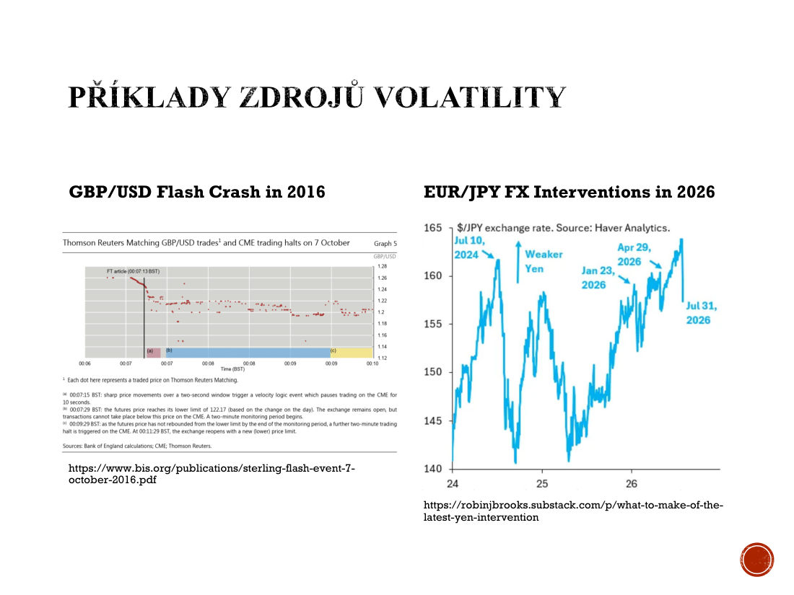
Slajd 3 (Brůna, Firma na devizovém trhu): vlevo jednotlivé obchody GBP/USD na Thomson Reuters Matching kolem 00:07 BST, kdy kurz během pár sekund spadl z asi 1,26 na 1,15 a CME zastavila obchodování futures. Vpravo USD/JPY v letech 2024–2026: každý vrchol u 160 jenů za dolar končí skokovým návratem po intervenci. Odnést si: zdrojem volatility nemusí být fundamenty, ale nízká likvidita nebo zásah autority.
Časová pásma a likvidita
Obchodování se během dne posouvá mezi hlavními centry: Sydney → Tokio → Londýn → New York (s. 4). Likvidita i volatilita (měřená v pipech) proto během dne kolísá (s. 7, 8):
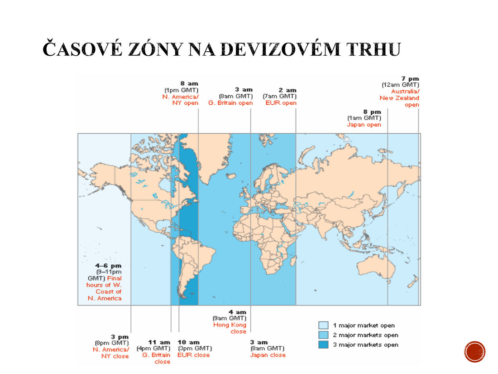
Slajd 4 (Brůna, Firma na devizovém trhu): mapa časových pásem. Čím tmavší pás, tím víc hlavních trhů je právě otevřeno. Nejtmavší (tři trhy) je krátký pás kolem překryvu Evropy a Severní Ameriky (v místním čase New Yorku 8–10 h, tedy zhruba 14–16 h SEČ).
maximum je při otevření Londýna a hlavně při překryvu Londýn–New York (odpoledne SEČ),
minimum je po zavření New Yorku, než se naplno rozjede Asie, a také během poledních pauz.
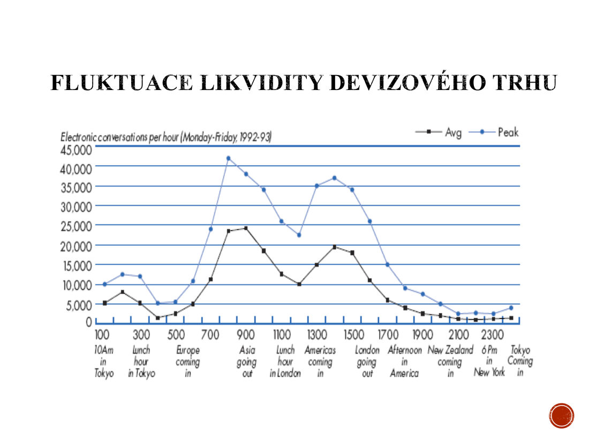
Slajd 7 (Brůna, Firma na devizovém trhu): počet elektronických konverzací (obchodních rozhovorů) za hodinu, pondělí–pátek, data z let 1992–93 (doplněk: údaje jsou staré, ale tvar dne se nezměnil). Dva vrcholy odpovídají otevření Evropy a Ameriky, mezi nimi je propad v „lunch hour in London“; po 17. hodině aktivita prudce klesá.
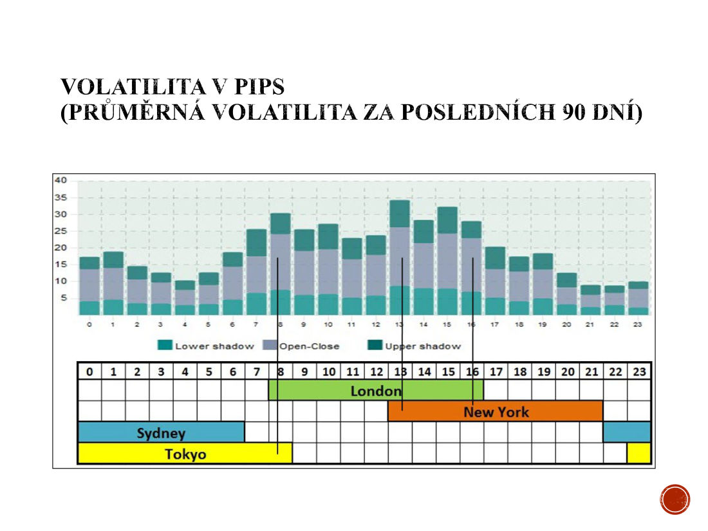
Slajd 8 (Brůna, Firma na devizovém trhu): průměrná volatilita v pipech v jednotlivých hodinách (průměr za posledních 90 dní) a pod ní otevírací doba center. Nejvyšší sloupce padají na otevření Londýna (8. hodina), otevření New Yorku (13. hodina) a jejich překryv; nejnižší jsou 21.–22. hodinu, když New York končí a Tokio ještě nezačalo. Hodiny jsou ve společném časovém pásmu (zdroj ho neuvádí).
Intuice: když je otevřeno víc center najednou, je víc protistran. Díky tomu jsou spready užší a velký obchod pohne kurzem méně. Firma, která potřebuje směnit velkou částku, by to měla dělat v nejlikvidnějších hodinách, ne v noci.
Struktura devizového trhu (BIS 2025)
Slajdy 5, 6, 10 a 11 jsou grafy z BIS Triennial Survey 2025 (net-net báze, denní průměry v dubnu). Tabulka shrnuje jejich hlavní čísla, grafy pod ní ukazují detail.
Hledisko
Hlavní údaje (podíl na denním obratu)
Místo (sídlo reportující strany)
Velká Británie 37,8 % · USA 18,6 % · Singapur 11,8 % · Hongkong 7,0 % · Japonsko 3,5 % · Německo 3,1 % · Švýcarsko 2,9 %
Podíly měn dávají dohromady 200 %, protože v každém obchodu jsou dvě měny. USD je ve zhruba 89 % obchodů, protože slouží jako „vehicle currency“: i obchod mezi dvěma jinými měnami se často provádí přes dolar.
FX swap (spot + opačný forward, nejobchodovanější instrument) není měnový swap (currency swap: výměna jistin a úrokových plateb na delší dobu, jen 2 %).
Hlavním centrem je Londýn, ne New York. Dvojnásobné započtení obchodů mezi dealery je ze statistik odstraněno (tzv. net-net báze).
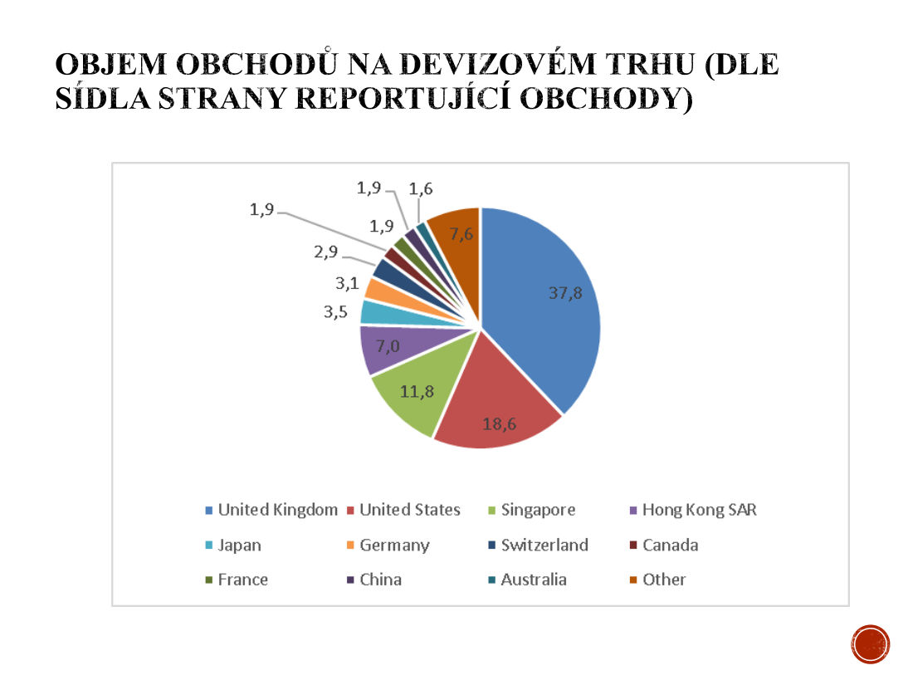
Slajd 5 (Brůna, Firma na devizovém trhu): obrat podle sídla reportující strany. Velká Británie 37,8 %, USA 18,6 %, Singapur 11,8 %, Hongkong 7,0 %. Velká Británie má tedy zhruba dvakrát větší podíl než druhé USA.
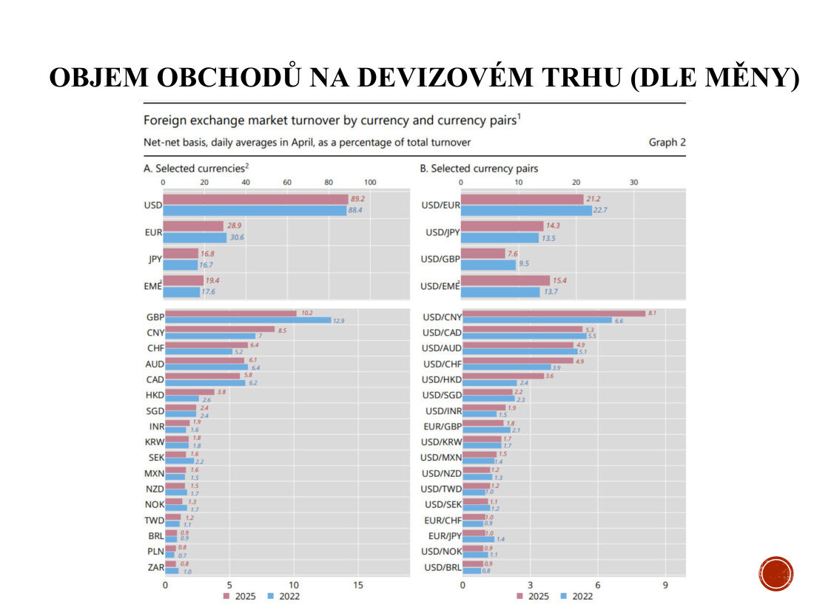
Slajd 6 (Brůna, Firma na devizovém trhu): vlevo podíl jednotlivých měn (součet 200 %), vpravo podíl měnových párů, v obou grafech 2025 proti 2022. USD je v 89,2 % obchodů, nejvýznamnější pár je USD/EUR (21,2 %, o 1,5 p. b. méně než 2022) a nejrychleji roste USD/CNY (6,6 → 8,1 %). Všimni si, že téměř každý pár obsahuje USD.
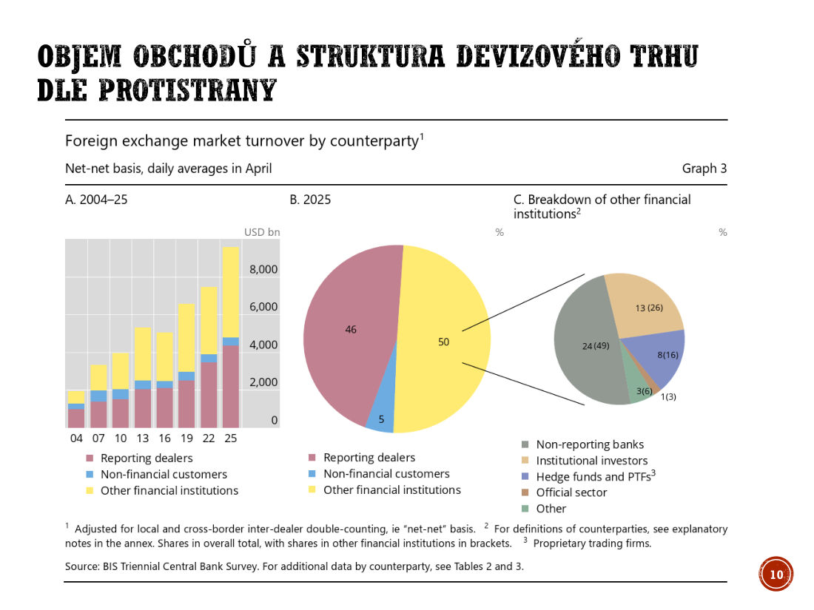
Slajd 10 (Brůna, Firma na devizovém trhu): obrat podle protistrany. Vlevo vývoj 2004–25 (obrat vzrostl na zhruba 9 bil. USD, žlutý podíl ostatních finančních institucí roste), uprostřed struktura 2025 (dealeři 46 %, ostatní finanční instituce 50 %, nefinanční klienti jen 5 %), vpravo rozpad ostatních finančních institucí (nereportující banky 24, institucionální investoři 13, hedge fondy a PTF 8; v závorce podíl uvnitř skupiny).
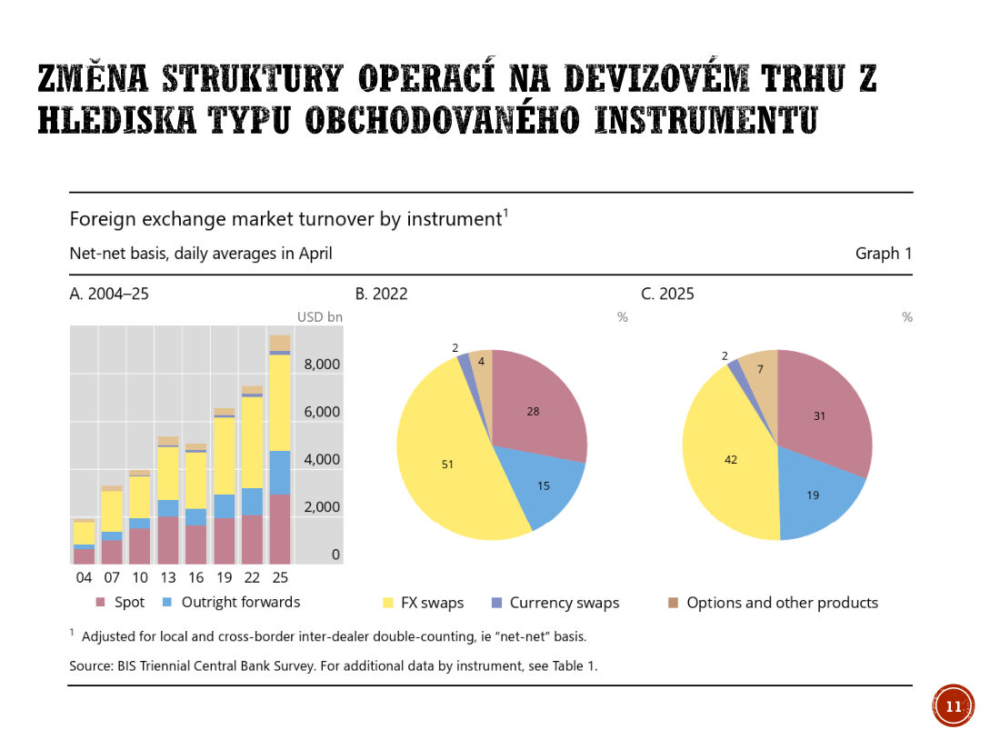
Slajd 11 (Brůna, Firma na devizovém trhu): obrat podle instrumentu. FX swapy klesly z 51 na 42 %, spot (28 → 31 %), outright forwardy (15 → 19 %) a opce (4 → 7 %) rostou. Měnové swapy zůstávají na 2 %.
Trendové změny ve struktuře trhu (s. 9)
Celkový objem roste, jen s krátkými poklesy likvidity v krizích (finanční krize, dluhová krize).
Klesá podíl obchodů mezi dealery: velcí market makeři přesouvají pozice na klienty a zároveň roste koncentrace, tedy trh obsluhuje méně velkých market makerů.
Roste podíl ostatních finančních institucí, a to díky:
algoritmickému a vysokofrekvenčnímu obchodování,
přesunu malých bank mezi klienty,
mezinárodní diverzifikaci portfoliových investorů a zajišťování jejich kurzového rizika,
investorům s pákou a krátkým horizontem (hedge fondy, retail: obchody na margin, carry trade),
růstu profesionálních správců aktiv (hedge, podílové a penzijní fondy).
Obchody nefinančních firem klesají. Důvody jsou pomalejší růst HDP a zahraničního obchodu, omezení syndikovaného financování a centralizace cash managementu nadnárodních firem, díky které se toky nejdřív započítají uvnitř skupiny.
Rostou retailoví investoři, kteří obchodují přes on-line platformy a brokery (tzv. retail aggregators).
Jak to shrnul přednášející: většina market makerů z trhu odešla a zůstalo jich jen pár. Zato roste aktivita klientů: HFT a algoritmické obchodování, retail přes brokery a mezinárodní diverzifikace správců majetku. Na trh tak vstupuje hodně nových investorů ochotných nést vyšší riziko, tzv. leverage investoři (obchodují na páku).
Spot, forward a vehicle currency
Spot
Forward (derivát)
Kurz
aktuální spotový kurz v okamžiku obchodu
fixně domluvený dopředu
Vypořádání
zpravidla za 2 pracovní dny (T+2)
v domluvený termín (např. za 3 měsíce)
Vehicle currency (VC): měna, přes kterou se obchodují a kotují ostatní měny.
EUR – regionální VC pro Evropu: CZK, NOK, HUF, CHF, SEK…
Kotace kurzu (s. 12, 13)
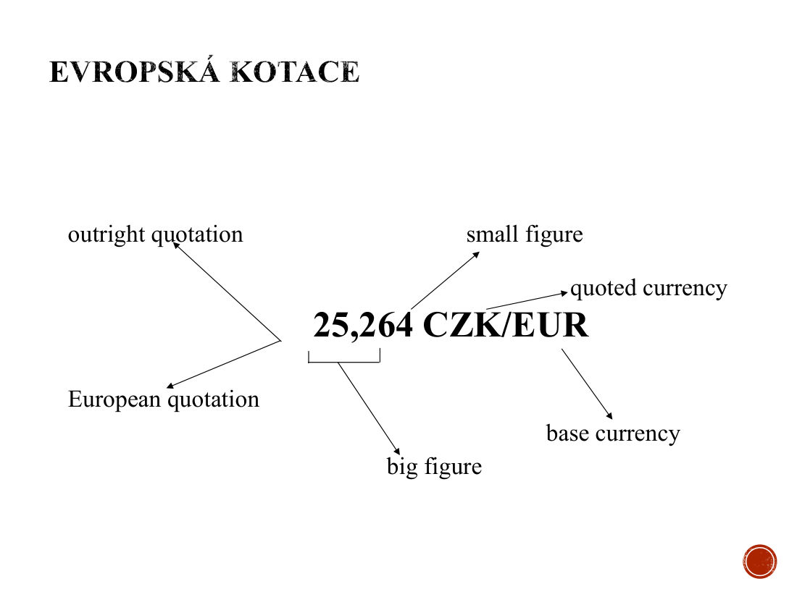
Slajd 12 (Brůna, Firma na devizovém trhu): rozbor kotace 25,264 CZK/EUR. Je to evropská outright kotace, kotovaná měna (CZK) je před lomítkem, báze (EUR) za ním. Big figure jsou číslice 25,2, small figure poslední dvě číslice (64). Slajd 13 ukazuje totéž pro americkou kotaci 0,0396 EUR/CZK.
Značení na přednášce:25,264 CZK/EUR znamená 25,264 CZK za 1 EUR (měna za lomítkem = jednotka).
base currency (báze) = měna, jejíž 1 jednotka se oceňuje: zde EUR, píše se za lomítko,
quoted currency (kotovaná měna) = měna, ve které je vyjádřena cena: zde CZK, píše se před lomítko.
Rozhoduje tedy, kde stojí vehicle currency, ne která měna je domácí. Evropská a americká kotace stejného páru jsou navzájem převrácené: $1 / 25{,}264 = 0{,}0396$. Oba kurzy jsou outright quotation, tedy kurz vyjádřený celým číslem. Opakem je kotace ve forwardových bodech (téma 2). Dealeři si mezi sebou často sdělují jen small figure („64“), protože big figure je všem známá.
⚠️ Pozor na zápis:
Na trhu (Reuters, Bloomberg, grafy) se píše opačně: EUR/CZK 25,264 = báze první. Grafy ve stejné prezentaci používají tržní zápis: „EUR/USD“ kolem 1,2–1,6 znamená USD za 1 EUR.
V testu vždy nejdřív urči, která měna je jednotka. Nejrychleji to poznáš podle velikosti čísla: 25 CZK za EUR dává smysl, 25 EUR za CZK ne.
Anglické učebnice (Eun–Resnick) definují „European / American terms“ vůči USD (European = cizí měna za 1 USD). Přednáška to zobecňuje na libovolnou vehicle currency, pro USD obě definice souhlasí.
Bid a ask se vždy vztahují k bázi (měně za lomítkem): u 25,250–25,280 CZK/EUR banka kupuje EUR za 25,250 a prodává za 25,280 CZK.
Křížový kurz (s. 14, 15)
Křížový kurz počítá kurz dvou měn přes třetí, typicky USD. Postup závisí na tom, jak jsou zadané výchozí kurzy.
a) Obě výchozí kotace mají stejnou bázi (USD) → kurzy se dělí, bid se dělí askem (s. 14):
Pravidlo křížového kurzu (s. 14, 15): prostřední měna (zde USD) se vždy vykrátí. Když stojí v obou kotacích na stejném místě (báze), kurzy se dělí a bid se kříží s askem. Když v jedné kotaci stojí na straně báze a v druhé na straně kotované měny, kurzy se násobí a bid jde s bidem, ask s askem.
Příklad (dělení): EUR/USD = 0,8540–0,8550 (EUR za 1 USD), GBP/USD = 0,7400–0,7410 (GBP za 1 USD). Kolik EUR stojí 1 GBP?
Bid: $0{,}8540 / 0{,}7410 = 1{,}1525$ EUR/GBP
Ask: $0{,}8550 / 0{,}7400 = 1{,}1554$ EUR/GBP
Kontrola: bid < ask ✔, spread 29 pipů je širší než spread každého z výchozích kurzů.
Intuice k bid/ask: křížový obchod jsou ve skutečnosti dva obchody za sebou a klient v každém z nich platí spread. Proto musí být křížový bid co nejnižší a ask co nejvyšší. Když ti vyjde bid > ask nebo spread užší než u výchozích kurzů, máš prohozené bid a ask.
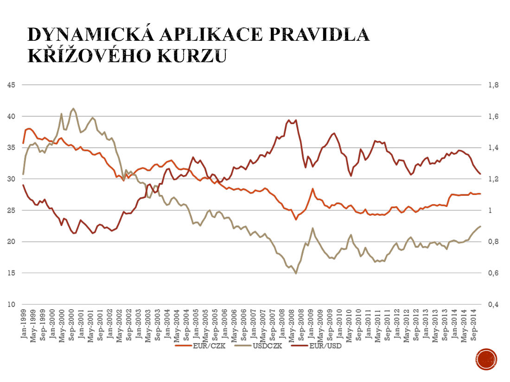
Slajd 16 (Brůna, Firma na devizovém trhu): EUR/CZK, USDCZK a EUR/USD v letech 1999–2014 (EUR/USD na pravé ose, tržní zápis). Křivka USD/CZK se pohybuje téměř zrcadlově k EUR/USD: při vrcholu EUR/USD kolem 1,6 v roce 2008 klesl dolar k 15 CZK, kdežto EUR/CZK se pohybovalo jen mezi 24 a 28.
Dynamická aplikace (s. 16): podle pravidla $\text{CZK/USD} = \text{CZK/EUR} \cdot \text{EUR/USD}$ platí, že když je koruna vůči euru relativně stabilní, kurz CZK/USD kopíruje pohyb EUR/USD. Když v roce 2008 euro vůči dolaru extrémně posílilo (tržně EUR/USD ≈ 1,6), dolar klesl k 15 CZK. Pro českou firmu fakturující v USD je tedy velká část rizika ve skutečnosti riziko pohybu eura vůči dolaru.
Trojúhelníková arbitráž
Na cvičení jsme přes křížové kurzy zkoumali, jestli se vyplatí přesunout peníze přes více měn. Když se kótovaný křížový kurz liší od kurzu spočteného přes třetí měnu, projdeš „trojúhelník“ tří směn a jedním směrem skončíš s víc penězi, než s kolika jsi začal. To je arbitráž, výdělek bez rizika. Opačným směrem naopak proděláš, protože v každé směně platíš spread.
Příklad(vymyšlené kurzy, stejný typ jako na cvičení): banky kotují
EUR/USD = 0,8540–0,8550 (EUR za 1 USD), GBP/USD = 0,7400–0,7410 (GBP za 1 USD) a jiná banka EUR/GBP = 1,1600–1,1610 (EUR za 1 GBP). Máme 1 000 000 USD.
0. Křížový kurz: z příkladu výše vychází EUR/GBP = 1,1525–1,1554. Kótovaný bid 1,1600 je nad syntetickým askem 1,1554 → libra je u třetí banky drahá, arbitráž je možná.
Cesta A: USD → EUR → GBP → USD USD → EUR: banka od nás kupuje USD (bázi) za bid: $1\,000\,000 \cdot 0{,}8540 = 854\,000$ EUR
EUR → GBP: kupujeme GBP (bázi) za ask: $854\,000 / 1{,}1610 = 735\,573$ GBP
GBP → USD: kupujeme USD (bázi) za ask: $735\,573 / 0{,}7410 = 992\,676$ USD → ztráta 7 324 USD Cesta B: USD → GBP → EUR → USD USD → GBP: prodáváme USD za bid: $1\,000\,000 \cdot 0{,}7400 = 740\,000$ GBP
GBP → EUR: prodáváme drahou GBP za bid: $740\,000 \cdot 1{,}1600 = 858\,400$ EUR
EUR → USD: kupujeme USD za ask: $858\,400 / 0{,}8550 = 1\,003\,977$ USD → zisk 3 977 USD
Schéma k příkladu výše: počáteční 1 000 000 USD projde trojúhelníkem v obou směrech. Čísla v uzlech jsou částky po jednotlivých směnách, na šipkách použitý kurz (bid, když bázi prodáváme, ask, když ji kupujeme). Ztrátová cesta A kupuje drahou libru, výdělečná cesta B ji u třetí banky draze prodává.
Proč vydělává cesta B: libra je u třetí banky nadhodnocená, takže vyhraje směr, ve kterém ji tam prodáme (GBP → EUR). Cesta A ji tam naopak draze kupuje.
Rozpětí bid–ask z příkladu na číselné ose. Syntetické EUR/GBP vychází z EUR/USD a GBP/USD (1,1525–1,1554), kótovaná druhá banka 1,1600–1,1610. Rozpětí se nepřekrývají, a proto je arbitráž možná. Bez arbitráže se musí překrývat.
Jak nastavit kotaci, aby arbitráž nebyla možná: kótovaný křížový kurz se musí překrývat s rozpětím spočteným z ostatních dvou kotací. Vlastní bid nesmí být nad syntetickým askem a vlastní ask pod syntetickým bidem. V příkladu by to znamenalo EUR/GBP bid ≤ 1,1554 a ask ≥ 1,1525.
⚠️ Postup v testu: u každé směny si nejdřív řekni, která měna je báze a jestli ji kupuješ (ask) nebo prodáváš (bid). Pak násobíš, když směňuješ bázi na kotovanou měnu, a dělíš, když směňuješ kotovanou měnu na bázi. Spočítej oba směry trojúhelníku: jeden vyjde se ztrátou (spread) a jeden případně se ziskem.
Cvičení: kotace, spread a křížový kurz
Cvičení K. Brůny, Kotace, spread a křížový kurz (Kotace,_spread_a_krizovy_kurz.doc). Řešení níže jsou vlastní a ověřená výpočtem, ve cvičení řešení uvedena nejsou.
Úloha 1: evropská, americká, nebo křížová kotace? (Yahoo Finance) Yahoo Finance (a Reuters, Bloomberg) píše pár tržně, tedy báze první: EUR/USD 1,17 = 1,17 USD za 1 EUR. Na přednášce je to opačně, proto si každý ticker nejdřív přepiš do zápisu přednášky a podívej se, kde stojí vehicle currency:
Yahoo (tržní zápis)
Zápis přednášky
Typ kotace
Proč
USD/CZK, USD/JPY, USD/CAD
CZK/USD, JPY/USD, CAD/USD
evropská
USD (VC) je za lomítkem
EUR/USD, GBP/USD, AUD/USD
USD/EUR, USD/GBP, USD/AUD
americká
USD (VC) je před lomítkem
EUR/CZK, EUR/HUF, EUR/SEK
CZK/EUR, HUF/EUR, SEK/EUR
evropská
EUR je regionální VC, stojí za lomítkem
EUR/GBP, EUR/JPY, GBP/JPY
GBP/EUR, JPY/EUR, JPY/GBP
křížový kurz
pár bez USD (a bez VC): kurz se počítá přes USD
Konkrétní seznam i hodnoty na Yahoo se mění. Postup je ale vždy stejný: (1) poznej, která měna je báze (za lomítkem v zápisu přednášky), (2) je-li jednou z měn USD, jde o evropskou/americkou kotaci podle místa USD, (3) nejsou-li v páru USD ani jiná vehicle currency, jde o křížový kurz.
Úloha 2: small figures a spread (dealer kótuje USD/EUR = 1,1145 / 1,1152)
a) Small figures: big figure je 1,11, small figures jsou poslední dvě číslice: 45 / 52 (dealer řekne „čtyřicet pět, padesát dva“).
b) Spread v pipech: pip je 4. desetinné místo, tedy 0,0001. $$\text{spread} = \text{ask} - \text{bid} = 1{,}1152 - 1{,}1145 = 0{,}0007 \;\Rightarrow\; \mathbf{7\ pipů}$$
Spread v procentech: $$\frac{\text{ask} - \text{bid}}{\text{ask}} = \frac{0{,}0007}{1{,}1152} \approx \mathbf{0{,}063\ \%}$$
(při dělení bidem nebo středem vyjde prakticky totéž: 0,0628 %; ve zdroji není určeno, čím se dělí.)
Úloha 3: křížové kurzy AUD/EUR a GBP/CHF z tabulky Tabulka (v .doc přiložená jako obrázek, jde o úlohu z učebnice Eun–Resnick) udává střední kurzy, bez bid a ask. Buňka v řádku X a sloupci Y je kurz X/Y v zápisu přednášky, tedy kolik X za 1 Y. Ověření: řádek USD, sloupec EUR = 1,3247 USD/EUR; řádek EUR, sloupec USD = 0,7549 EUR/USD; $1{,}3247 \cdot 0{,}7549 = 1{,}0000$ ✔. Hledané buňky (AUD/EUR, GBP/CHF) jsou v tabulce prázdné. Dopočítáme je přes USD: prostřední měna se vykrátí, kurzy se tedy násobí.
AUD/EUR (kolik AUD za 1 EUR): $\text{AUD/EUR} = \text{AUD/USD} \cdot \text{USD/EUR} = 1{,}015 \cdot 1{,}3247 = \mathbf{1{,}3446}$
Kontrola: převrácená hodnota buňky EUR/AUD, $1 / 0{,}7437 = 1{,}3446$ ✔
GBP/CHF (kolik GBP za 1 CHF): $\text{GBP/CHF} = \text{GBP/USD} \cdot \text{USD/CHF} = 0{,}6328 \cdot 1{,}0184 = \mathbf{0{,}6444}$
Kontrola: převrácená hodnota buňky CHF/GBP, $1 / 1{,}5519 = 0{,}6444$ ✔
Jiná cesta k témuž: dělení se stejnou bází, např. AUD/EUR = AUD/USD ÷ EUR/USD. Zde to není potřeba, protože USD je jednou báze a jednou kotovaná měna.
Úloha 4: trojstranná arbitráž s 10 mil. CZK Kotace: A = CZK/EUR 27,862 / 27,875, B = USD/EUR 1,1587 / 1,1589, C = CZK/USD 26,436 / 26,553.
0. Křížový kurz z A a B (společná báze EUR → dělení, bid / ask a ask / bid):
$$\text{CZK/USD}_{bid} = \frac{27{,}862}{1{,}1589} = 24{,}0418 \qquad \text{CZK/USD}_{ask} = \frac{27{,}875}{1{,}1587} = 24{,}0571$$
Dealer C kótuje 26,436 / 26,553, tedy výrazně výš: dolar je u C drahý, arbitráž je možná. Vyhraje směr, ve kterém dolary u C prodáme.
Směr 1: CZK → EUR → USD → CZK CZK → EUR (A): kupujeme EUR (bázi) za ask: $10\,000\,000 / 27{,}875 = 358\,744$ EUR
EUR → USD (B): prodáváme EUR (bázi) za bid: $358\,744 \cdot 1{,}1587 = 415\,677$ USD
USD → CZK (C): prodáváme USD (bázi) za bid: $415\,677 \cdot 26{,}436 = 10\,988\,841$ CZK → zisk 988 841 CZK (+9,9 %) Směr 2: CZK → USD → EUR → CZK CZK → USD (C): kupujeme USD za ask: $10\,000\,000 / 26{,}553 = 376\,605$ USD
USD → EUR (B): kupujeme EUR za ask: $376\,605 / 1{,}1589 = 324\,968$ EUR
EUR → CZK (A): prodáváme EUR za bid: $324\,968 \cdot 27{,}862 = 9\,054\,255$ CZK → ztráta 945 745 CZK (−9,5 %)
Jak má C změnit kotaci: aby arbitráž zmizela, musí se jeho rozpětí překrývat se syntetickým 24,0418 / 24,0571. Konkrétně:
bid C ≤ 24,0571 (syntetický ask): to je podmínka, která ruší směr 1. Při přesně 24,0571 vyjde ve směru 1 zisk 0 CZK,
ask C ≥ 24,0418 (syntetický bid): ruší opačný směr; stávající ask 26,553 podmínku splňuje, ale je nereálně vysoko.
Dealer C tedy musí kotaci posunout dolů z cca 26,4–26,6 na úroveň kolem 24,05, např. 24,04 / 24,06. Zadané kurzy nejsou tržní (skutečný CZK/USD je při těchto kurzech A a B zhruba 24), jde o procvičení postupu.
⚠️ Pozor ve cvičení:
V této úloze je USD/EUR v zápisu přednášky, tedy USD za 1 EUR. A i B proto mají bázi EUR, dělí se jejich kurzy (CZK/EUR ÷ USD/EUR). Násobit by se mělo jen tehdy, kdyby se prostřední měna na jedné straně vykrátila (např. AUD/USD · USD/EUR v úloze 3).
Spread v procentech se dělí cenou, ne počtem pipů. Pip je 4. desetinné místo (u JPY 2.), takže 7 pipů ≠ 0,7 %.
Na Yahoo je zápis tržní (báze první). Před klasifikací kotace jako evropské nebo americké ji vždy přepiš do zápisu přednášky.
Shrnutí:
Devizový trh je OTC, běží 24 h denně od pondělí do pátku a jeho obrat je zhruba 9,6 bil. USD denně. Nefinanční firmy tvoří jen asi 5 % obratu.
Exportér má dlouhou pozici v cizí měně a škodí mu posílení domácí měny. Importér má krátkou pozici a škodí mu její oslabení.
Likvidita je nejvyšší při překryvu Londýn–NY. Při nízké likviditě hrozí skoky kurzu (flash crash GBP 2016). Intervence mohou náhle zlomit trend (JPY).
BIS 2025: hlavním centrem je Londýn (38 %), USD je v 89 % obchodů (měny dohromady 200 %), nejobchodovanějším instrumentem jsou FX swapy (42 %), nadpoloviční podíl mají ostatní finanční instituce.
Trendy: klesá podíl obchodů mezi dealery i obchodů firem, roste podíl ostatních finančních institucí (HFT, fondy, retail).
Market maker kotuje bid/ask (+ volume), price taker kotaci přijímá. Trh je OTC a fragmentovaný: na různých místech jiná cena.
Riziko = odchylka od očekávání, expozice = čemu a v jaké výši je firma vystavena.
Spot se vypořádává zpravidla T+2, forward v domluvený termín za předem fixovaný kurz. Vehicle currency: USD globálně, EUR v Evropě.
Zápis na přednášce: CZK/EUR = CZK za 1 EUR, báze je za lomítkem. Evropská kotace má vehicle currency za lomítkem (25,264 CZK/EUR), americká před lomítkem (1,1527 USD/EUR).
Křížový kurz: se stejnou bází se dělí (bid/ask, ask/bid), s prostřední měnou, která se vykrátí, se násobí (bid·bid, ask·ask).
Trojúhelníková arbitráž: když kótovaný křížový kurz leží mimo rozpětí spočtené z ostatních kotací, jeden směr trojúhelníku (USD → GBP → EUR → USD) vydělá a opačný prodělá. Bez arbitráže se rozpětí musí překrývat.
Small figures kotace 1,1145 / 1,1152 jsou 45 / 52, spread je 7 pipů (zhruba 0,063 % ask). Pip je 4. desetinné místo.
Postup v arbitráži: spočítej syntetický kurz (dělení se stejnou bází, jinak násobení) a porovnej ho s kótovaným. Dealer s odchylnou kotací ji musí posunout tak, aby se rozpětí překrývalo se syntetickým, jinak se vyplatí obchodovat s ním (cvičení: bid C ≤ 24,0571 CZK/USD).
2. Řízení kurzového rizika prostřednictvím měnových forwardů
Přednáška 5. 10. · Ondřej Šíma · zdroj: Řízení kurzového rizika prostřednictvím měnových forwardů (1MT461_02_forwardy_ZS2026.pdf, čísla slajdů v závorkách)
Návaznost: otevřená devizová pozice a proč zajišťovat
Otevřená devizová pozice (s. 7):
dlouhá: k dané splatnosti jsou aktiva v cizí měně větší než pasiva v této měně. Držitel „sází“ na zhodnocení cizí měny.
krátká: pasiva v cizí měně jsou větší než aktiva. Držitel „sází“ na znehodnocení cizí měny.
Pohledávka v EUR (český exportér) = dlouhá pozice. Škodí mu posílení CZK (depreciace EUR): za eura dostane méně korun (s. 8).
Závazek v EUR (český importér) = krátká pozice. Škodí mu oslabení CZK (apreciace EUR): za eura zaplatí víc korun (s. 9).
Interní zajištění (zavřít pozici bez derivátu, tzv. přirozené zajištění) je např. nákup vstupů v eurech, eurové úvěry nebo platby v eurech i mezi tuzemskými firmami, takže se příjmy a výdaje v EUR vyrovnají (s. 11–13). Externí zajištění je finanční nástroj, nejčastěji měnový forward, a řešíme ho v tomto tématu. Opce navazují v tématu 3 (s. 10). Motivací jsou výkyvy kurzů: propad měn rozvíjejících se trhů v roce 2013 (s. 14) nebo „horké léto“ 2022, kdy firmy zajišťovaly hlavně kvůli volatilitě kurzu, ne kvůli tomu, jestli je koruna silná či slabá (s. 16).
Základní logika forwardu
Forward: kontrakt uzavřený „dnes“ (t), který začíná o dva pracovní dny později (t + 2D) a plní se v pevně dohodnutém budoucím termínu (t + 2D + x) za kurz FR (forward rate) dohodnutý už dnes (s. 17).
Splatnost obvykle do 1 roku (tam je likvidní), existují i delší, ale s nižší likviditou a širším spreadem.
Spread bid/ask závisí na výši SR, délce splatnosti, volatilitě SR, měnovém páru a okamžiku sjednání.
OTC trh: forwardy jsou „šité na míru“ (částka, termín) a sekundárně neobchodovatelné.
⚠️ Pozor: forward kurz zafixuje kurz pro obě strany. Zajišťuje proti nepříznivému pohybu, ale zároveň se vzdává příznivého (s. 59, 82). Chce-li firma zisk z příznivého pohybu, je lepší opce (téma 3).
Kotace forwardového kurzu: outright a swapové body
Forward se kotuje buď jako outright (celý kurz FRBID / FRASK), nebo ve swapových (forwardových) bodech jako rozdíl vůči spotu (s. 19).
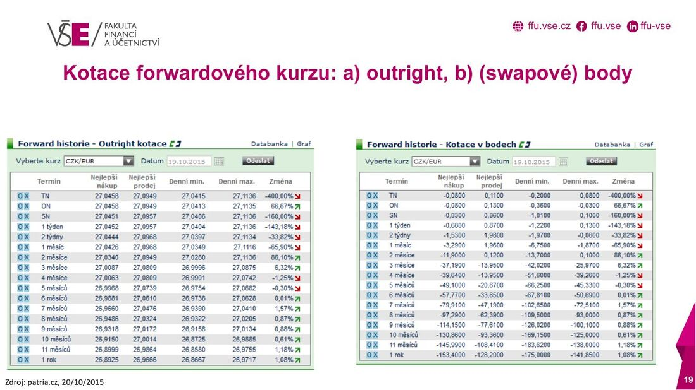
Slajd 19 (Šíma, Forwardy): tržní kotace CZK/EUR k 19. 10. 2015, vlevo outright, vpravo v bodech. U každé splatnosti jsou body záporné, tedy forwardový diskont na EUR. S delší splatností se body zvětšují (u 1 roku −153,40 / −128,20). Body se tedy jen přičtou nebo odečtou od spotu.
Převodní konstanta X odpovídá počtu desetinných míst kotace: 10 000 u kurzu na 4 desetinná místa (s. 20), 1 000 u kurzu na 3 desetinná místa (s. 51–52).
Příklad (CHF/EUR, FR < SR, s. 21): SR = 0,9913 / 0,9916, FR 3M v bodech −25,42 / −23,38.
$FR_{BID} = 0{,}9913 - \tfrac{25{,}42}{10\,000} = 0{,}9913 - 0{,}002542 \approx 0{,}9888$
$FR_{ASK} = 0{,}9916 - \tfrac{23{,}38}{10\,000} = 0{,}9916 - 0{,}002338 \approx 0{,}9893$
FR < SR = diskont bazické měny (EUR). Přepočet sedí se slajdem (0,98876 a 0,98926).
⚠️ Pozor:
Při prémii se body přičítají: bid + nižší číslo (low points), ask + vyšší číslo (high points). Při diskontu se odečítají: bid − vyšší číslo (high points), ask − nižší (low points) (s. 20–21). Výsledek musí vždy dát FRBID < FRASK.
doplněk: podle velikosti se pozná směr, i když znaménka v kotaci chybí. Když je první číslo (bid) menší než druhé (ask), jde o prémii. Když je větší, jde o diskont. Je to běžná tržní konvence, ne výslovně ze slajdů.
Správné X vždy odvoď z počtu desetinných míst (jinak se spleteš o řád).
Krytá úroková parita (CIP)
Krytá úroková parita (covered interest parity): vztah mezi forwardovým a spotovým kurzem, který vyplývá z úrokových sazeb obou měn (s. 22).
Značení: D = domácí měna (kótovaná, např. CZK), F = zahraniční (bazická, např. EUR), n = počet dní. Úroky se počítají na 360 dní (s. 22). f je forwardová prémie (diskont).
Proč „krytá“? Výnos je zajištěn forwardem, v rovnici není očekávaný spot E(SR) jako u nekryté parity.
Proč „úroková parita“? Kurz se odvozuje z úrokových sazeb různých zemí.
Proč FR ≠ SR? Kvůli času: kurz platí pro různá data a úroky se liší.
Kdy prémie a kdy diskont (s. 23): je-li $IR_D > IR_F$, pak $f > 0$ = prémie na bazickou měnu (CZK/EUR: kurz vzroste, např. z 27,2266 na 27,2507). Je-li $IR_D < IR_F$, pak $f < 0$ = diskont (CHF/EUR: kurz klesne, 0,9913 → 0,9888). Měna s vyšší úrokovou sazbou je na forwardu slabší.
⚠️ Pozor: slajd 23 píše, že při prémii je „kótovaná měna (CZK) na forwardu dražší“. Správně je dražší bazická měna (EUR): za 1 EUR zaplatíš víc CZK, tedy CZK je na forwardu slabší. Řiď se číselným příkladem na slajdu (27,2266 → 27,2507 CZK/EUR) a pravidlem „vyšší sazba = slabší měna“ (potvrzuje ho i s. 123).
Sazby: PRIBOR (zápůjční sazba na českém mezibankovním trhu) > PRIBID (depozitní sazba). Stejně LIBOR > LIBID. Banka si tedy půjčuje dráž, než ukládá (s. 24–25, 39). Proto se v kotaci rozlišují IRD (depozitní) a IRL (zápůjční) a platí $IR_L > IR_D$.
Úrokový diferenciál a forwardová prémie (diskont)
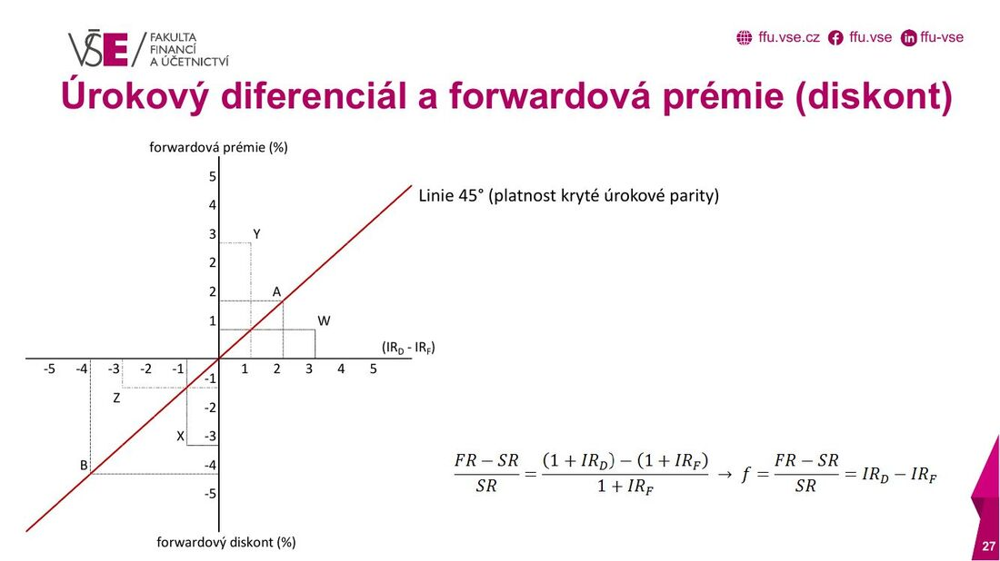
Slajd 27 (Šíma, Forwardy): na ose x je úrokový diferenciál $IR_D - IR_F$, na ose y forwardová prémie (diskont) $f$. Na 45° linii platí CIP. Body pod linií (W, X, B…) a nad linií (Y, A, Z) ukazují odchylky. Z grafu si odnes směr odchylky a směr, kterým se trh vrací k linii.
Příklad bod W (s. 28–30): $f < IR_D - IR_F$. SR = 27,00 CZK/EUR, FR 12M = 27,27, IRCZK = 4 %, IREUR = 1 %. Prémie $f = (27{,}27-27{,}00)/27{,}00 = 1\,\%$, diferenciál $= 3\,\%$.
Investor z eurozóny: 1 EUR → 27 CZK, uloží na 4 % → $27 \cdot 1{,}04 = 28{,}08$ CZK, forwardem (27,27) zpět: $28{,}08 / 27{,}27 = 1{,}0297$ EUR. Investice přímo do EUR: $1{,}01$ EUR. Do CZK je výhodnější (1,0297 > 1,01).
Český investor: do CZK $27{,}00 \cdot 1{,}04 = 28{,}08$ CZK. Do EUR s forwardem: $1{,}01 \cdot 27{,}27 = 27{,}5427$ CZK. Preferuje CZK (28,08 > 27,5427).
Reakce trhu: roste poptávka po CZK na spotu ($\downarrow SR$, CZK apreciuje) a nabídka CZK na forwardu ($\uparrow FR$, CZK deprecieuje) → $f$ roste až k 3 % na linii (s. 29).
Příklad bod Z (s. 31–32): $f > IR_D - IR_F$. SR = 27,00, FR 12M = 26,73, IRCZK = 2 %, IREUR = 5 %. Prémie $f = (26{,}73-27{,}00)/27{,}00 = -1\,\%$, diferenciál $= -3\,\%$.
Investice do CZK s forwardem: $27 \cdot 1{,}02 / 26{,}73 = 1{,}0303$ EUR. Přímo do EUR: $1{,}05$ EUR. Výhodnější je EUR. Český investor: CZK $27{,}54$, EUR s forwardem $1{,}05 \cdot 26{,}73 = 28{,}07$ CZK (28,07 > 27,54).
Reakce trhu: poptávka po EUR na spotu ($\uparrow SR$), nabídka EUR na forwardu ($\downarrow FR$) → $f$ klesá k −3 %.
U subjektů, které si půjčují, platí opačná preference (s. 33). Pointa: arbitráž „žene“ trh zpátky na 45° linii.
Propojení forwardového a spotového trhu
Tři vztahy tvoří trojúhelník (s. 35):
Vztah
Kdo ho hlídá
Rovnice
SR a očekávaný SRe
devizová spekulace
nekrytá úroková parita (později)
FR a SR
devizová arbitráž
krytá úroková parita (nyní)
FR a SRe
devizová spekulace
$FR = E_t(SR_{t+n})$
Devizové arbitráže
Arbitráže „obnovují“ platnost CIP. Skládají se z devizových, depozitních a úvěrových operací, takže subjekty svým jednáním působí na SR, FR i IR. Tři typy (s. 37–38):
okružní (úvěrová): kapitál si půjčíme, směníme ho do jiné měny, uložíme na termínový vklad a forwardem převedeme zpět (s. 40–41),
depozitní: máme vlastní kapitál a volíme mezi termínovým vkladem v původní měně, nebo směnou do jiné měny, vkladem a forwardovým návratem (s. 42–43),
hedgová: zajišťujeme uzavřenou pozici (pohledávku, závazek) buď forwardem, nebo operacemi na peněžním a spotovém trhu (syntetický forward) (s. 44–45).
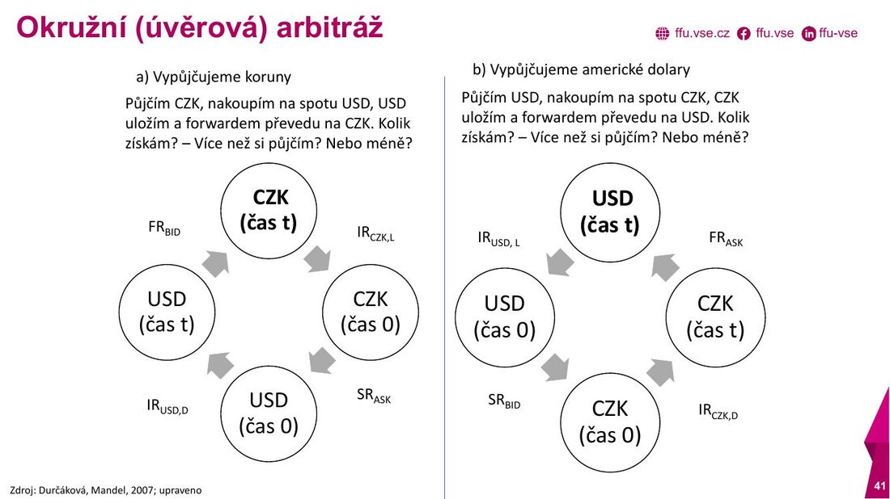
Slajd 41 (Šíma, Forwardy): okružní arbitráž. Vlevo si půjčíme CZK (IRCZK,L), na spotu nakoupíme USD za SRASK, uložíme za IRUSD,D a forwardem prodáme za FRBID. Vpravo je opačný směr. Při platnosti CIP vyjde přesně splacená půjčka. Jinak vznikne zisk, nebo ztráta.
Který kurz a která sazba (s. 39): kotace mají $SR_{BID} < SR_{ASK}$, $FR_{BID} < FR_{ASK}$ a sazby $IR_L > IR_D$. Vždy platí: půjčuji → IRL, ukládám → IRD. Banka bázi od klienta kupuje za bid a prodává za ask.
Hedgová arbitráž a syntetický forward
Firma má uzavřenou devizovou pozici (známe částku i splatnost). Otevřenou pozici zajistí (s. 45):
forwardem, nebo
operacemi na peněžním a spotovém trhu (úvěr, spot, depozitum) = syntetický forward.
Platí-li CIP, jsou obě varianty stejně výhodné. Syntetický forward se užívá, když klasický forward není dostupný (např. rozvíjející se země), nebo když firma nemá přístup na mezibankovní trh. Na klientském trhu navíc nemusí být trh absolutně efektivní.
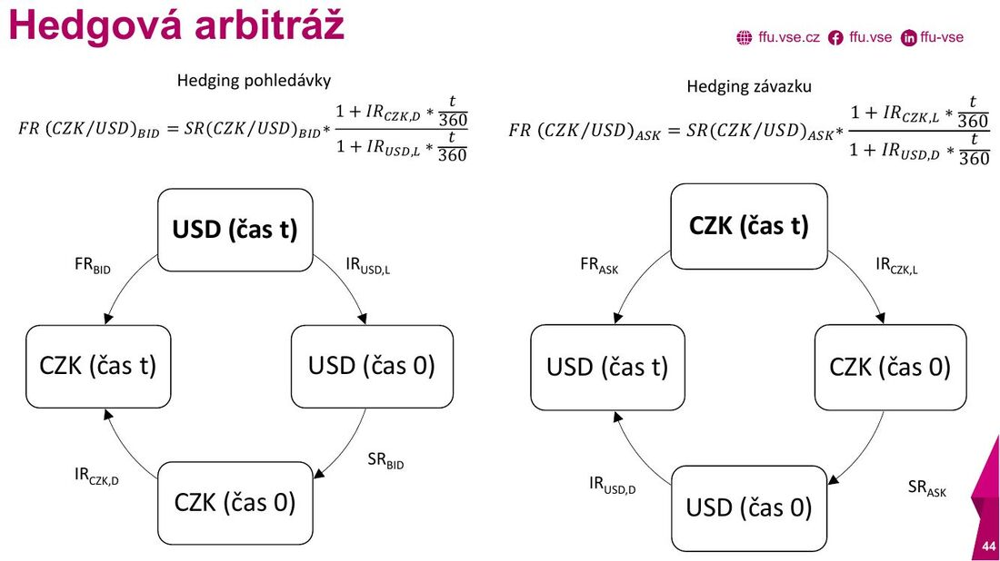
Slajd 44 (Šíma, Forwardy): hedging pohledávky (vlevo) a závazku (vpravo). Cesta „po kruhu“ musí vyjít stejně jako přímý forward. Odtud vzorce pro FRBID a FRASK: pohledávka = USD přicházejí v čase t, závazek = CZK potřebujeme v čase t.
1) půjčka v cizí měně (IRzahr,L), 2) směna na spotu (SRBID), 3) vklad v domácí měně (IRdom,D)
1) půjčka v domácí měně (IRdom,L), 2) směna na spotu (SRASK), 3) vklad v cizí měně (IRzahr,D)
Vyplatí se forward, když
$FR_{BID} >$ pravá strana (dostanu víc korun) (s. 88)
$FR_{ASK} <$ pravá strana (zaplatím míň korun) (s. 93)
Intuice: pravá strana vzorce je „cena“, za kterou vyrobím forward sám z peněžního trhu. Exportér chce dostat co nejvíc korun, tedy forward bere, jen když ho banka platí líp než „domácí výroba“. Importér chce zaplatit co nejméně a bere forward, když ho banka prodává levněji.
⚠️ Pozor:
U pohledávky se bere bid (SRBID, FRBID) a u závazku ask, protože klient je price taker a banka kupuje eura od exportéra a prodává je importérovi (s. 55, 72).
Ve vzorcích jsou vždy kombinace (domácí D, zahraniční L) u pohledávky a (domácí L, zahraniční D) u závazku. Nikdy ne stejná sazba D/L v obou měnách.
Značení: na slajdech 84–93 je t doba trvání forwardu v dnech (v učebnici n). Kratší podoba $\tfrac{FR-SR}{SR} \approx (IR_D - IR_L)\cdot \tfrac{t}{360}$ platí jen při nízkých sazbách (s. 84).
Od kotace k swapovým bodům (s. 48–52): z vzorce pro FR vychází rozdíl $FR - SR = \dfrac{(IR_{D} - IR_{F})\cdot n/360}{1 + IR_{F}\cdot n/360}\cdot SR$ (zjednodušeně: swapové body ≈ úrokový diferenciál × SR × n/360). Do bidu se dosazují sazby jako u FRBID a do asku jako u FRASK.
Příklad 1: výpočet FR a swapových bodů (s. 47–52)
Zadání: forward 3M (90 dní), SR (CZK/EUR) = 28,573 / 28,591. Sazby 3M: CZK depozitní 2,15 %, zápůjční 2,18 %, EUR depozitní 1,08 %, zápůjční 1,11 % (% p.a.). Spočti FRBID, FRASK a swapové body.
Bid (zajištění pohledávky: CZK D, EUR L): $FR_{BID}-SR_{BID} = \dfrac{(0{,}0215-0{,}0111)\cdot \frac{90}{360}}{1+0{,}0111\cdot\frac{90}{360}} \cdot 28{,}573 \approx 0{,}074$
Ask (CZK L, EUR D): $FR_{ASK}-SR_{ASK} = \dfrac{(0{,}0218-0{,}0108)\cdot \frac{90}{360}}{1+0{,}0108\cdot\frac{90}{360}} \cdot 28{,}591 \approx 0{,}078$
Swapové body ($X = 1000$): 74 / 78, tedy $FR_{BID} = 28{,}573 + 0{,}074 = 28{,}647$ a $FR_{ASK} = 28{,}591 + 0{,}078 = 28{,}669$.
Přepočet: přesné hodnoty jsou 0,07408 a 0,07841 (FR 28,6471 / 28,6694), na 3 desetinná místa sedí se slajdem.
Příklad 2: zajištění pohledávky (s. 54–63)
Tonak vyvezl zboží za 100 000 EUR se splatností za 3 měsíce (90 dní). Exportér je v dlouhé pozici a bojí se posílení CZK. Na slajdech 55–56 se ukazuje, že pohledávka přináší zisk při oslabení koruny a ztrátu při posílení. Kurz pro přepočet je SRBID, protože banka eura od exportéra kupuje.
BID
ASK
Depozitní (D)
Zápůjční (L)
SR (CZK/EUR)
27,2146
27,2205
IR CZK 3M
4,00 %
6,50 %
FR (CZK/EUR)
27,1949
27,2375
IR EUR 3M
0,75 %
2,00 %
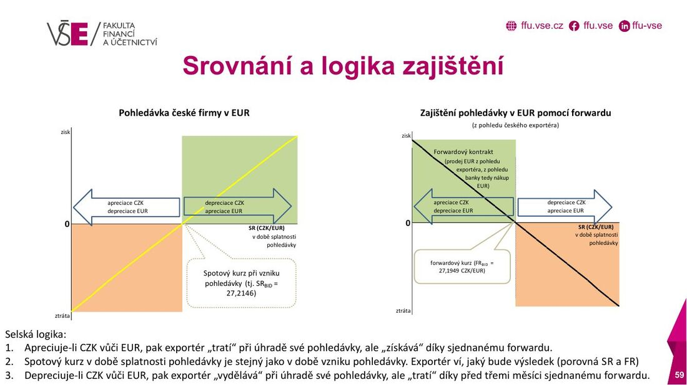
Slajd 59 (Šíma, Forwardy): vlevo výsledek neuzavřené pohledávky (zisk při depreciaci CZK, ztráta při apreciaci), vpravo forward na prodej EUR s opačným sklonem. Součet obou čar je vodorovný: výsledek exportéra je zafixovaný.
Řešení (s. 56–62): Scénáře bez zajištění (s. 56): při 27 CZK/EUR exportér dostane $100\,000 \cdot 27 = 2\,700\,000$ CZK, tedy o 21 460 méně než při $SR_{BID} = 27{,}2146$ ($2\,721\,460$ CZK). Při 28 dostane $2\,800\,000$, tedy o 78 540 více.
I. Forward: $100\,000 \cdot FR_{BID} = 100\,000 \cdot 27{,}1949 = \mathbf{2\,719\,490}$ CZK (jisté bez ohledu na budoucí SR).
II. Syntetický forward (půjčit EUR, směnit, uložit CZK):
A) půjčka v EUR, která za 90 dní naroste na 100 000: $\dfrac{100\,000}{1+0{,}02\cdot\frac{90}{360}} = 99\,502{,}49$ EUR (sazba L = 2 %)
B) směna na spotu: $99\,502{,}49 \cdot 27{,}2146 = 2\,707\,920{,}40$ CZK
C) vklad v CZK (D = 4 %): $2\,707\,920{,}40 \cdot (1+0{,}04\cdot\frac{90}{360}) = \mathbf{2\,734\,999{,}60}$ CZK
Závěr: syntetický forward vynese o $2\,734\,999{,}60 - 2\,719\,490 = 15\,509{,}60$ CZK víc. Výhodnější je syntetický forward. Přepočet sedí se slajdy.
Proč a jak se nastolí rovnováha (s. 63): ověřujeme, zda $FR_{BID} \gtrless SR_{BID}\cdot\frac{1+IR_{CZK,D}\,t/360}{1+IR_{EUR,L}\,t/360}$. Zjednodušeně: $\dfrac{27{,}1949-27{,}2146}{27{,}2146} = -0{,}07\,\%$ vs. $(0{,}04-0{,}02)\cdot\frac{90}{360} = 0{,}5\,\%$ → $-0{,}07\,\% < 0{,}5\,\%$, forward je pro exportéra horší než syntetický. Exportéři proto půjčují v EUR, směňují na CZK (CZK apreciuje na spotu, $\downarrow SR_{BID}$) a na forwardu prodávají CZK ($\uparrow FR$). Rozdíl se zmenšuje. Úrokové sazby reagují s odstupem.
Pozn.: slajd 63 má nadpis „Příklad 4b“, ale jde o stejný příklad č. 2 (Tonak).
⚠️ Pozor: slajd 58 píše v jednom místě 2 719 460 CZK místo správných 2 719 490 CZK (překlep). Hodnota 97 124,64 EUR v třetím scénáři je ale spočítaná z 2 719 490 a je správně.
Příklad 3: zajištění závazku (s. 65–69)
CzechFruit dovezl zboží za 100 000 EUR se splatností za 3 měsíce. Je v krátké pozici a bojí se oslabení CZK. Používá se FRASK a SRASK (firma eura kupuje, banka je prodává), stejná tabulka jako u příkladu 2.
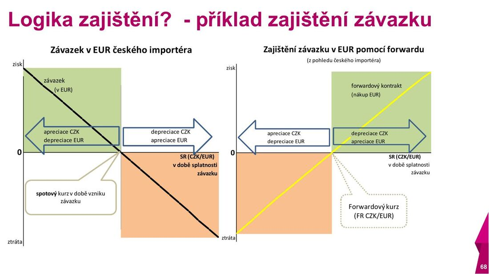
Slajd 68 (Šíma, Forwardy): závazek (vlevo) a forwardový nákup EUR (vpravo) mají opačný sklon, takže se vyruší. Zrcadlově k pohledávce: importér prodělá na závazku při depreciaci CZK, ale vydělá na forwardu.
Rovnováha (s. 69): $\dfrac{27{,}2375-27{,}2205}{27{,}2205} = 0{,}0625\,\%$, diferenciál $(0{,}065-0{,}0075)\cdot\frac{90}{360} = 1{,}4375\,\%$ → $FR_{ASK} < SR_{ASK}\cdot\frac{1+IR_{CZK,L}t/360}{1+IR_{EUR,D}t/360}$, takže pro importéra je forward levnější. Subjekty poptávají EUR na forwardu → $\uparrow FR_{ASK}$ a parita se postupně vrací.
dopočet (na slajdech je jen nerovnost): syntetický forward = vklad v EUR $\dfrac{100\,000}{1+0{,}0075\cdot\frac14} = 99\,812{,}85$ EUR → za ně $99\,812{,}85\cdot 27{,}2205 = 2\,716\,955{,}71$ CZK → splatit úvěr $2\,716\,955{,}71\cdot(1+0{,}065\cdot\frac14) = 2\,761\,106{,}24$ CZK. Forward: $100\,000 \cdot 27{,}2375 = 2\,723\,750$ CZK, tedy o 37 356 CZK levnější.
Příklad 3b: závazek 10 mil. EUR na 6 měsíců (s. 70–81)
Zadání (s. 70): importér má závazek 10 000 000 EUR za 6 měsíců (180 dní). Banka kotuje FR (CZK/EUR) = 32,238 / 32,293, SR = 32,257 / 32,271, IR CZK 6M: D 2,04 %, L 2,09 %, IR EUR 6M: D 2,06 %, L 2,08 %. Je lepší klasický, nebo syntetický forward?
Bez zajištění (s. 71): při SR = 32,271 stojí splátka $322\,710\,000$ CZK. Při posílení CZK na 29 vyjde $290\,000\,000$ (zisk 32,71 mil. CZK), při oslabení na 34 vyjde $340\,000\,000$ (ztráta 17,29 mil. CZK).
1) Klasický forward (FRASK): $10\,000\,000 \cdot 32{,}293 = \mathbf{322\,930\,000}$ CZK. Při jakémkoli budoucím SR (s. 73): při 29 je forward ztrátový o $10\,000\,000\cdot(32{,}293-29)=32{,}93$ mil. CZK, při 34 ziskový o $17{,}07$ mil. CZK, ale celková cena splátky je vždy 322,93 mil. CZK.
2) Syntetický forward (počítá se „odzadu“, s. 77):
a) velikost EUR vkladu (D = 2,06 %): $x = \dfrac{10\,000\,000}{1+0{,}0206\cdot\frac{180}{360}} = 9\,898\,050{,}08$ EUR
b) CZK na jejich nákup za SRASK: $9\,898\,050{,}08 \cdot 32{,}271 = 319\,419\,974{,}3$ CZK
c) splátka CZK úvěru (L = 2,09 %): $319\,419\,974{,}3 \cdot (1+0{,}0209\cdot\frac{180}{360}) = \mathbf{322\,757\,913}$ CZK
Závěr: $322\,930\,000 - 322\,757\,913 = 172\,087$ CZK → syntetický forward je levnější. Na slajdu 80 vychází 172 090 CZK (zaokrouhlování). Souhlasí.
Hraniční kurz (s. 81): oba způsoby jsou stejné při $FR_{ASK} = 32{,}271\cdot\dfrac{1+0{,}0209\cdot\frac{180}{360}}{1+0{,}0206\cdot\frac{180}{360}} = 32{,}276$. Kótovaný 32,293 je vyšší, tedy pro importéra horší.
⚠️ Pozor: postup výpočtu syntetického forwardu je opačný než postup operací (s. 80): operace jdou úvěr → směna → vklad, ale počítá se vklad → úvěr v CZK → splátka s úroky. A vždy se zajímej, v jakém čase a v jaké měně je částka: depozitum v EUR je současná hodnota 10 mil. EUR.
Nastolení rovnováhy (s. 81): využívání syntetického forwardu sníží depozitní sazbu na EUR a zvýší zápůjční sazbu na CZK. Hlavně ale vzroste poptávka po EUR na spotu (EUR apreciuje), takže syntetický forward je méně výhodný a rozdíl mezi způsoby se zmenší.
Jak se stanoví FRBID a FRASK (příklady navíc, s. 84–93)
Dva příklady bez čísel na ukázku postupu. Pivovar Černá hora má pohledávku 100 000 USD za 1 měsíc (t = 30 dní): dlouhá pozice, obává se apreciace CZK. Vinselekt Michlovský má závazek 250 000 EUR za 3 měsíce (t = 90 dní): krátká pozice, obává se depreciace CZK.
Kroky u pohledávky (s. 85): půjčím současnou hodnotu $\dfrac{100\,000}{1+IR_{USD,L}\,t/360}$ v USD → směním za SRBID → vložím na CZK vklad (IRCZK,D). U závazku (s. 90) počítám odzadu: velikost EUR vkladu pro 250 000 EUR → CZK na jeho nákup za SRASK → splátka CZK úvěru včetně úroků.
Vhodnost forwardu (s. 82)
Obvykle jen do jednoho roku.
Když se kurz může vyvinout příznivě, je lepší opce, protože forward příznivý vývoj „zahodí“.
Když nevíme přesnou splatnost nebo výši, je lepší opce nebo futures (s delší splatností).
Když forwardový kurz jen „sleduje“ spot, je otázka, zda má zajištění smysl (problém rozvíjejících se ekonomik s trendovou apreciací).
Spekulace: vztah FR a očekávaného spotu
Dokonalá predikce (s. 95): $SR_{t+n} = FR_{t;t+n}$. Platí při dvou předpokladech: (1) forward odráží očekávání trhu, $FR = E_t(SR_{t+n})$, a (2) očekávání jsou „perfektní“, $E_t(SR_{t+n}) = SR_{t+n}$.
Predikce není dokonalá kvůli nákladům na spekulaci (transakční náklady, riziková prémie) a kvůli povaze očekávání (jsou racionální, adaptivní?).
Forward jako nástroj spekulace (s. 104–105, Komerční banka 2017): spekulant, který prodá forward na EUR za CZK, vydělá, když bude spot při splatnosti nižší (koruna silnější). Je to to samé jako zajištění exportu, jen bez podkladových eur. Protistrana (banka) se kryje opačným obchodem na spotu, a když se tlak dotkne hranice kurzového závazku, musí intervenovat ČNB. Forwardové body proto neodrážejí jen úrokový diferenciál, ale i poptávku a nabídku, tržní nerovnováhy a rizikové přirážky.
Praxe: forwardy za kurzového závazku ČNB (2013–2017)
ČNB držela kurz CZK/EUR na hodnotě 27 od listopadu 2013 do dubna 2017 (s. 97). Exportéři se v té době zajišťovali méně, protože „pojišťovnou“ byla centrální banka (s. 99, 111). Blížící se konec závazku ale změnil situaci.
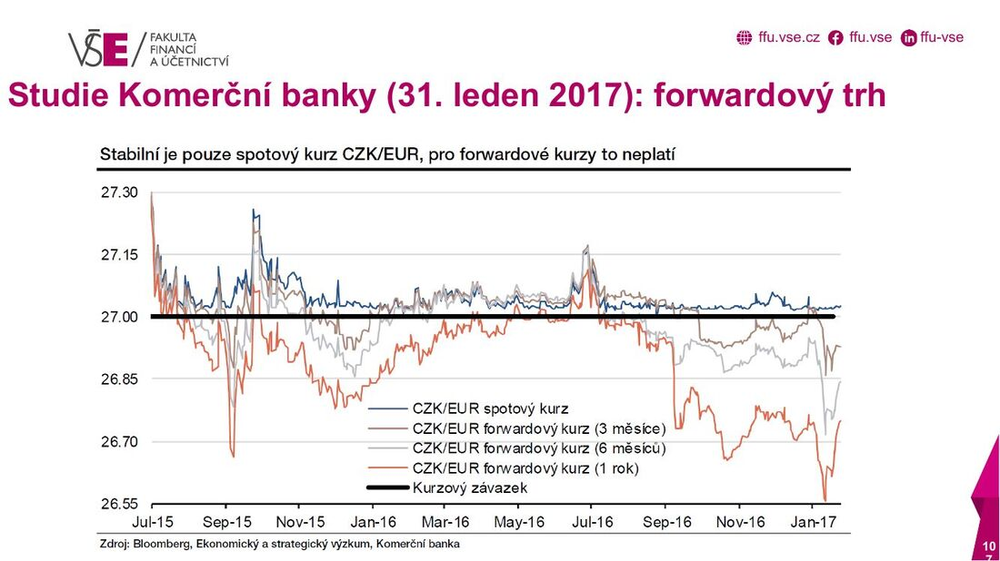
Slajd 107 (Šíma, Forwardy; Komerční banka, leden 2017): spot (modře) drží těsně nad kurzovým závazkem 27, ale 3M, 6M a zejména 1R forward klesají hluboko pod 27 (až ke 26,55). Trh sází na posílení koruny po konci závazku a exportéři se zajišťují. To je ukázka, že FR je „hlídán“ nejen arbitráží, ale i spekulací.
Cena zajištění vzrostla (s. 102): loni v létě byl 1R forwardový kurz 5–10 haléřů pod spotem, v lednu 2017 až −50 haléřů (kolem 26,50). „Čím větší poptávka na budoucí nákup koruny za eura, tím horší zajišťovací kurz.“
Příliv spekulativního kapitálu (s. 100, 104): 12M forward bid se krátce dostal na 26,55 CZK/EUR.
Riziko chybějící protistrany (s. 106): spekulanti už koruny koupili a exportéři zajistili. Po konci závazku může chybět strana nabízející eura k prodeji a koruna může dočasně oslabit.
S koncem závazku končí „bezplatné zajištění“ od ČNB. Před jeho zavedením byly běžné denní změny kurzu o půl procenta i procento (s. 106).
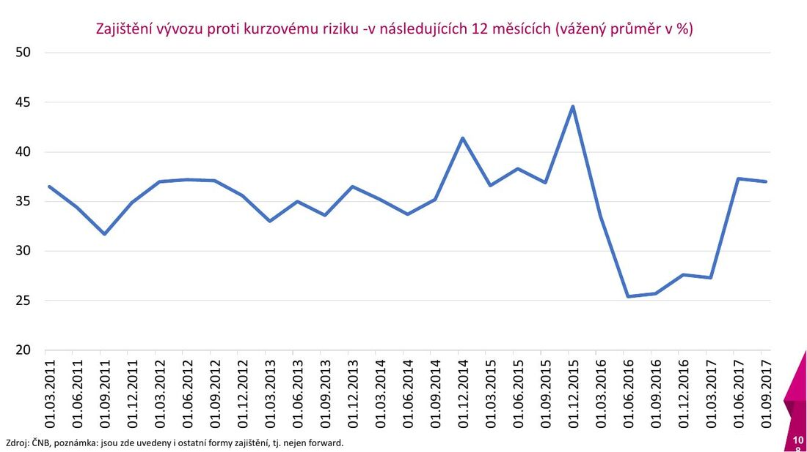
Slajd 108 (Šíma, Forwardy; data ČNB): podíl vývozu zajištěného na následujících 12 měsíců (vážený průměr, zahrnuje i jiné nástroje než forward). Maximum kolem 44 % na konci roku 2015, propad na asi 25 % v polovině 2016, k 37 % v roce 2017. Hodnoty jsou odečtené z grafu. Odpovídá to textu: v roce 2016 byla zajištěnost 25 % (s. 101).
Brexit (s. 98): libra po referendu oslabila vůči koruně o 7,5 % za den, o 10 % do pondělí. Většina vývozců se nezajistila, a když začali, cena zajištění v květnu a červnu 2016 už vzrostla natolik, že by se jim nevyplatilo. Ponaučení: zajišťovat se musí předem, než volatilita zdraží forward.
Postavení forwardů a platnost CIP v praxi
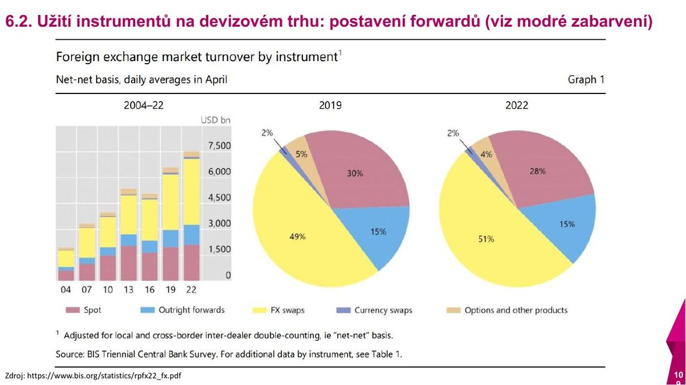
Slajd 109 (Šíma, Forwardy; BIS 2022): spot 28 %, outright forwardy 15 %, FX swapy 51 %, měnové swapy 2 %, opce 4 %. Forwardy tvoří kolem sedminy obratu. Novější údaje BIS 2025 (forwardy 19 %) jsou v tématu 1.
Důvody odchylek od CIP (s. 110, 119–120): arbitráž poblíž 45° linie nemusí být možná. Odchylka je omezena pásmem celkových transakčních nákladů, $-TC < \dfrac{(1+r_d)S}{(1+r_f)F} - 1 < +TC$ (s. 119):
transakční náklady (spready),
politické riziko a riziková prémie obecně (rating),
různé zdanění, resp. kapitálové kontroly,
ovlivňování kurzu autoritami (např. Čína).
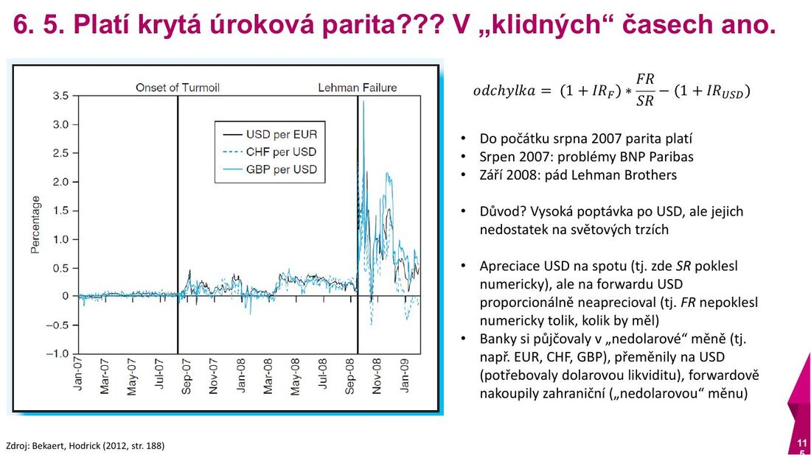
Slajd 115 (Šíma, Forwardy; Bekaert, Hodrick 2012): odchylka od CIP do srpna 2007 téměř nulová, po začátku turbulencí (BNP Paribas, 2007) a hlavně po pádu Lehman Brothers (září 2008) prudce vzrostla. Důvodem byla vysoká poptávka po USD a jejich nedostatek: banky si půjčovaly v jiných měnách, směňovaly na USD a forwardem nakupovaly zpět, takže USD na spotu apreciovalo víc, než odpovídal forward.
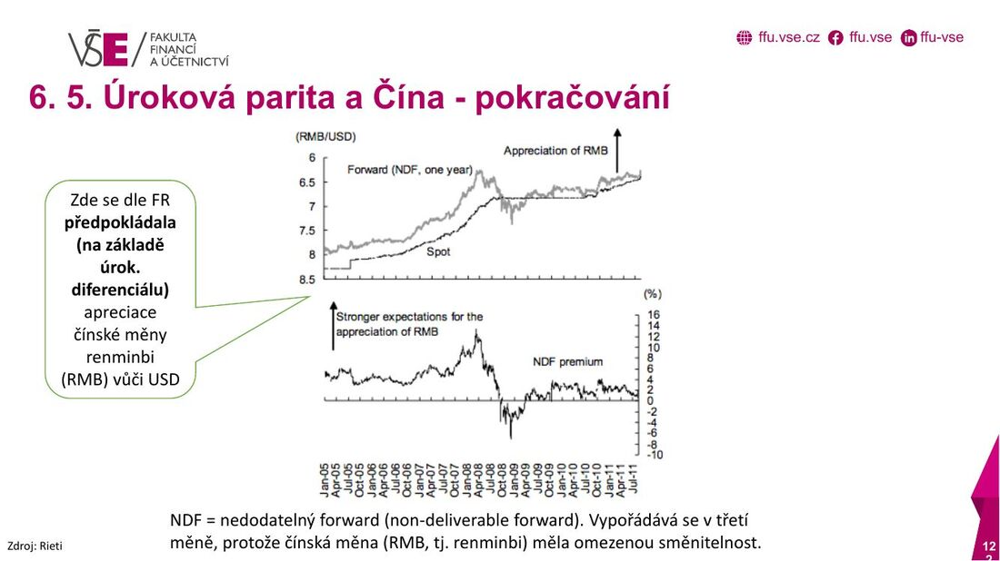
Slajd 122 (Šíma, Forwardy; Rieti): u čínského renminbi forward (NDF) ukazoval očekávanou apreciaci RMB podle úrokového diferenciálu, zatímco spot se pohyboval pomaleji. NDF (non-deliverable forward) se nevypořádává dodáním měny, ale v třetí měně (USD), protože RMB měla omezenou směnitelnost.
⚠️ Forward není předpověď (s. 123): podle ČNB (Globální ekonomický výhled, červenec 2023) „forwardový kurz nepředstavuje výhled, vychází z kryté úrokové parity, tj. kurz země s vyšší úrokovou sazbou oslabuje. Představuje aktuální možnost zajištění budoucího kurzu.“
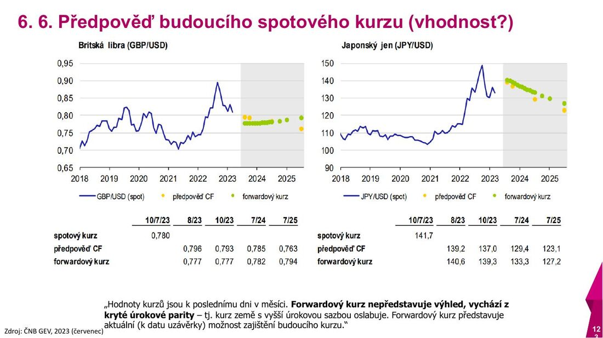
Slajd 123 (Šíma, Forwardy; ČNB 2023): forwardový kurz (zelené body) se od předpovědi ČNB (žluté body) liší. Forwardový kurz jen přenáší úrokový diferenciál (např. JPY/USD: spot 141,7, forward na 7/24 133,3, předpověď 129,4).
Kurzový režim a riziko (s. 111–114): při méně flexibilním režimu volatilita klesá a firmy se zajišťují méně (Indie 2001–2007 vs. po roce 2008, s. 112), ale riziko tím nezmizí. Devalvace měn v tzv. pevném režimu přišly skokově: venezuelský bolívar u Diagea (s. 113), kazašský tenge v roce 2015 (s. 114). Home Credit financoval úvěry v Kazachstánu místními vklady v tenge, tedy uzavřel devizovou pozici. Slajd ho uvádí jako vhodný příklad.
Dlouhodobě sledují spot a forward navzájem a forwardová prémie kopíruje úrokový diferenciál (kanadský dolar vs. USD, s. 124).
Samostatné „zadání příkladů“ k forwardům v podkladech není. Slajdy ho nezmiňují, příklady 1, 2, 3, 3b a „příklady navíc“ jsou přímo v prezentaci (s. 47–93).
Shrnutí:
Exportér (pohledávka) má dlouhou pozici a bojí se posílení CZK, importér (závazek) má krátkou a bojí se oslabení CZK. Forward fixuje kurz FR dnes pro budoucí termín (OTC, na míru, do 1 roku, neobchodovatelný).
Forward kotuje outright, nebo ve swapových bodech: $\text{body} = (FR - SR)\cdot X$. Při prémii se body přičítají (bid + low, ask + high), při diskontu odečítají (bid − high, ask − low).
CIP: $FR = SR\cdot\frac{1+IR_D\,n/360}{1+IR_F\,n/360}$, přibližně $f = (FR-SR)/SR \approx IR_D - IR_F$. Vyšší úroková sazba = slabší měna na forwardu (prémie na bázi, když $IR_D > IR_F$).
FR a SR hlídá arbitráž (okružní, depozitní, hedgová), FR a SRe hlídá spekulace. Odchylku od 45° linie arbitráž „vrací“ (W: SR↓, FR↑; Z: SR↑, FR↓).
Pohledávka: $FR_{BID} = SR_{BID}\cdot\frac{1+IR_{dom,D}t/360}{1+IR_{zahr,L}t/360}$, závazek: $FR_{ASK} = SR_{ASK}\cdot\frac{1+IR_{dom,L}t/360}{1+IR_{zahr,D}t/360}$. Forward použij, když dá exportérovi víc, resp. importérovi méně korun než syntetický forward.
Syntetický forward se počítá odzadu (vklad → úvěr → splátka). Forward se vzdává příznivého vývoje kurzu, opce ne.
Forwardové body odrážejí i poptávku, nabídku a rizika, ne jen úrokový diferenciál (kurzový závazek ČNB: forwardy hluboko pod 27). CIP se rozbíjí při transakčních nákladech, politickém riziku, kapitálových kontrolách a v krizi (Lehman 2008). Forward není předpověď kurzu.
3. Řízení kurzového rizika prostřednictvím měnových opcí
Přednáška 12. 10. · Ondřej Šíma · zdroj: Řízení kurzového rizika prostřednictvím měnových opcí (1MT461_03_opce_ZS2026.pdf, 76 slajdů) a Zadání příkladů (1MT461_03_opce_zadani_prikladu.pptx, 5 slajdů); čísla slajdů v závorkách, zadání = zadání příkladů
Základní informace a terminologie
Opce: smlouva mezi držitelem (kupujícím, holder, buyer) a vypisovatelem (prodávajícím, writer, seller). Držitel kupuje právo, ne povinnost, koupit nebo prodat devizu za předem dohodnutou cenu. Vypisovatel musí plnit na pokyn držitele (s. 4).
Smluvní strany se předem dohodnou na velikosti kontraktu, podkladovém instrumentu (spotový kurz) a dni splatnosti (s. 4).
Opční prémie (Pr) je cena opce. Držitel ji platí vždy, ať opci využije, nebo ne. Udává se na jednotku bazické měny (např. 1,20 CZK za 1 GBP) (s. 4).
Realizační cena (SP, strike price) je kurz, za který lze devizu koupit nebo prodat. Nesmí se zaměňovat s prémií (s. 4).
Kotace na přednášce: SR = kótovaná měna / bazická měna (např. CZK/GBP). Bazická měna je ta, kterou opce kupuje nebo prodává. SRt+n je spotový kurz v době splatnosti opce (s. 9, 14).
⚠️ Pozor: prémie (cena opce, platí se vždy) a strike (kurz, za který se případně směňuje) jsou dvě různé věci. V testu se na jejich záměnu často ptají.
Dělení opcí
Druhy
podle trhu
OTC (mimoburzovní) × burzovní
podle práva
call (kupní): právo koupit bazickou měnu × put (prodejní): právo bazickou měnu prodat
podle okamžiku plnění
americká: uplatnit lze kdykoli do splatnosti × evropská: až v den splatnosti
Tyto tři dělení se navzájem kombinují (např. evropská OTC call opce) (s. 5).
Call (kupní)
Put (prodejní)
Držitel
právo koupit bazickou měnu za SP; povinnost zaplatit prémii
právo prodat bazickou měnu za SP; povinnost zaplatit prémii
Vypisovatel
povinnost prodat bazickou měnu za SP; právo na prémii
povinnost koupit bazickou měnu za SP; právo na prémii
Tabulka podle s. 6.
Základní opční pozice a jejich payoff
Čtyři pozice: long call (koupě kupní opce), short call (prodej kupní opce), long put (koupě prodejní opce), short put (prodej prodejní opce) (s. 8). Payoff = zisk nebo ztráta na jednotku bazické měny v závislosti na spotovém kurzu SRt+n v den splatnosti.
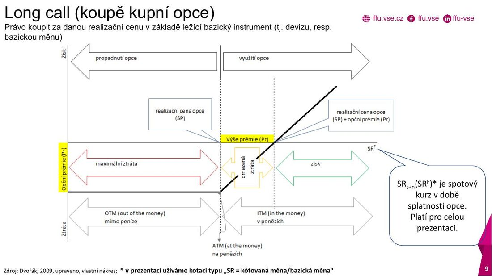
Slajd 9 (Šíma, Opce): payoff long call. Pod SP opce propadne a držitel ztrácí prémii (vodorovná čára na úrovni −Pr). Nad SP zisk roste, zlom je v SP a nulový výsledek je až v SP + Pr.
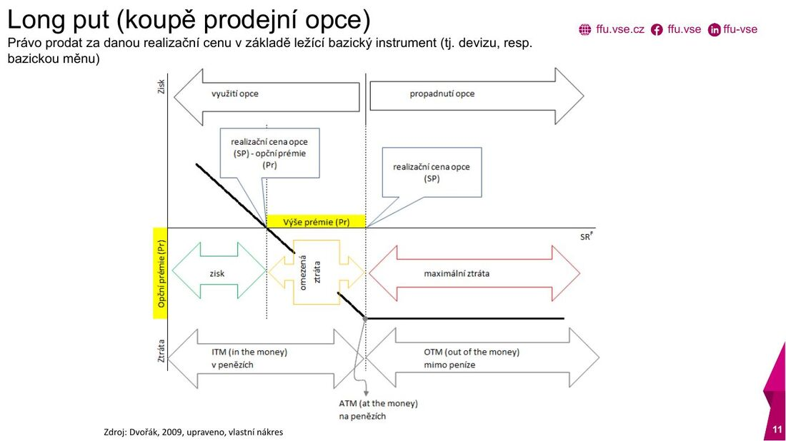
Slajd 11 (Šíma, Opce): payoff long put. Nad SP opce propadne a ztráta je jen prémie. Pod SP zisk roste s poklesem kurzu, nulový výsledek je v SP − Pr.
Pozice
Výsledek na jednotku
Zlom
Nulový výsledek
Max. ztráta / zisk
Long call
$\max(SR-SP,0)-Pr$
SP
SP + Pr
ztráta jen Pr, zisk neomezený (s. 9)
Short call
$Pr-\max(SR-SP,0)$
SP
SP + Pr
zisk jen Pr, ztráta teoreticky neomezená (s. 10)
Long put
$\max(SP-SR,0)-Pr$
SP
SP − Pr
ztráta jen Pr, zisk velký (kurz nemůže klesnout pod 0) (s. 11)
Short put
$Pr-\max(SP-SR,0)$
SP
SP − Pr
zisk jen Pr, ztráta velká (s. 12)
Intuice: vypisovatel je zrcadlový obraz držitele (zisk jednoho je ztráta druhého, součet je nula). Držitel má ztrátu omezenou prémií, vypisovatel call opce má ztrátu teoreticky neomezenou. Proto prémii vždy dostává. Úvaha o zrcadlení je doplněk; slajdy 9–12 ukazují jen čtyři diagramy.
Stav opce vůči kurzu: ITM (in the money, uplatnění se vyplatí), ATM (at the money, SR = SP), OTM (out of the money, uplatnění se nevyplatí). U call je ITM, když SR > SP, u put, když SR < SP (s. 9–12, 60–61).
Zajištění závazku kupní opcí
Kdo má závazek v cizí měně (importér), bojí se, že cizí měna zdraží, tedy že kurz CZK/GBP vyroste (depreciace CZK). Kurz si zajistí nákupem call opce na tuto měnu. Opce mu dává právo koupit ji za SP (s. 14–23, zadání s. 2).
Příklad 1 (zadání s. 2, slajdy 14–21): závazek 1,5 mil. GBP, call opce Splatnost závazku i opce za 1 měsíc, SP = 36,80 CZK/GBP, Pr = 1,20 CZK/GBP, spotový kurz při vzniku závazku $SR_0 = 37{,}0$ CZK/GBP. Nakreslete čistou pozici firmy.
Závazek samotný (výsledek na 1 GBP = kolik firma ušetří nebo přeplatí proti kurzu při vzniku):
$$\pi_{záv}=SR_0-SR_{t+n}=37{,}0-SR_{t+n}$$
Klesne-li kurz (CZK posílí), firma ušetří (zisk). Vzroste-li kurz, přeplatí (ztráta). Přímka klesá, protíná osu x v 37,0.
Call opce: kurz pod SP → opce propadne a výsledek je $-Pr=-1{,}2$. Nad SP → opci využijeme a výsledek je $SR_{t+n}-36{,}8-1{,}2$. Zlom je v 36,8, nulový výsledek v $SP+Pr=38{,}0$.
Kontrola na slajdech (s. 17–19): při $SR=35{,}2$: $(37{,}0-35{,}2)-1{,}2=+0{,}6$. Při $SR=38{,}6$: $-1{,}6+(38{,}6-36{,}8-1{,}2)=-1{,}6+0{,}6=-1{,}0$. Obojí vychází stejně jako na slajdech.
V korunách (× 1,5 mil. GBP): maximální ztráta proti kurzu 37,0 je $1{,}0\cdot1\,500\,000=1\,500\,000$ CZK. Nejhorší efektivní cena libry je $SP+Pr=38{,}0$ CZK/GBP, tedy $38{,}0\cdot1{,}5\text{ mil.}=57{,}0$ mil. CZK. Přepočet do CZK a efektivní cena jsou doplněk (vlastní výpočet).
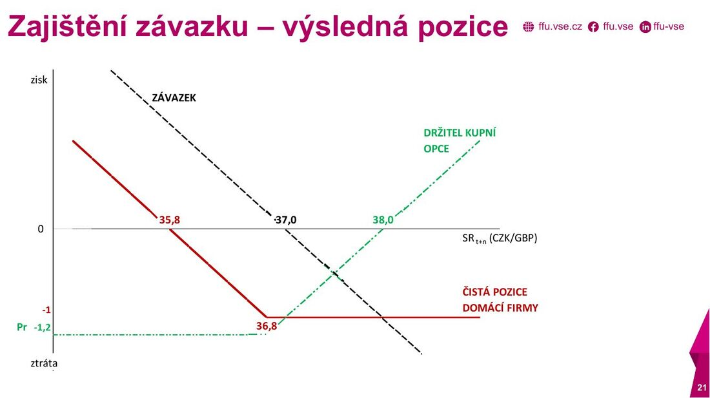
Slajd 21 (Šíma, Opce): čistá pozice domácí firmy (červeně). Černá přerušovaná čára je závazek (klesá, nula v 37,0), zelená je držitel kupní opce (−1,2 do 36,8, potom roste, nula v 38,0).
Popis grafu čisté pozice: osa x je kurz CZK/GBP při splatnosti, osa y zisk nebo ztráta na 1 GBP. Čistá pozice je klesající přímka s nulou v 35,8, která v 36,8 (strike) „zlomí“ do vodorovné čáry na úrovni −1,0. Vlevo (CZK posiluje) si firma ponechává zisk z levnějšího nákupu liber, minus prémie. Vpravo (CZK slábne) je ztráta shora omezená na 1,0 CZK/GBP. Opce tedy firmě seřízne nevýhodnou stranu a zachová výhodnou. Slajd 20 značí jeden čtvereček = 0,2 CZK/GBP.
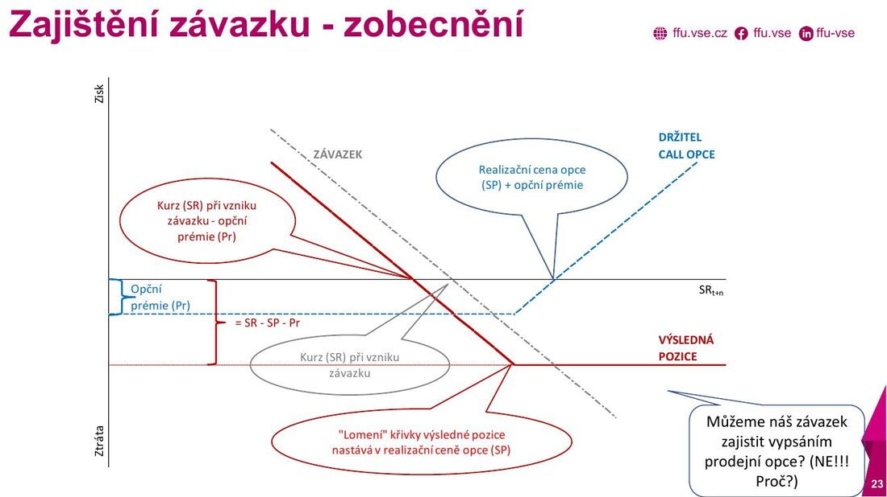
Slajd 23 (Šíma, Opce): zobecnění. Zlom výsledné pozice je v SP. Vodorovná část leží na úrovni SR − SP − Pr (kurz při vzniku závazku mínus strike mínus prémie).
Nad SP (opce využita): $\pi=SR_0-SP-Pr$ (konstantní, zde −1,0).
Pod SP (opce propadla): $\pi=SR_0-SR_{t+n}-Pr$ (zde $35{,}8-SR_{t+n}$).
Nejvyšší efektivní cena měny: $SP+Pr$.
⚠️ Pozor (otázka na s. 23, „NE!!! Proč?“): závazek se nedá zajistit vypsáním prodejní opce (short put). Firma by dostala prémii, ale při oslabení CZK (kurz roste), před kterým se chce chránit, by put propadla a závazek by jí zdražil bez jakékoli kompenzace. Vypsaný put by „pracoval“ jen při posílení CZK, kdy ochranu nepotřebuje. Ochranu dává jen koupě call. Obecně: zajišťující pozice musí mít opačný sklon než zajišťovaná.
Zajištění pohledávky put opcí
Kdo má pohledávku v cizí měně (exportér), bojí se, že cizí měna zlevní, tedy že vzroste hodnota domácí měny. Zajistí se nákupem put opce, která mu dává právo cizí měnu prodat za SP (s. 25–32, zadání s. 3).
Pohledávka: $\pi_{poh}=SR_{t+n}-SR_0=SR_{t+n}-3{,}8$. Roste s kurzem (za dolar dostane víc reálů), nula v 3,8.
Put opce: kurz nad 3,6 → opce propadne, výsledek $-0{,}3$. Pod 3,6 → prodá dolary za 3,6, výsledek $3{,}6-SR_{t+n}-0{,}3$. Nula v $SP-Pr=3{,}3$, zlom v 3,6.
$SR_{t+n}\ge 3{,}6$: $\pi=SR_{t+n}-4{,}1$ (rostoucí přímka s nulou v 4,1)
Kontrola podle tabulky na s. 28:
$SR_{t+n}$ (BRL/USD)
3,00
3,20
4,00
4,50
Pohledávka ($SR-3{,}8$)
−0,80
−0,60
0,20
0,70
Put opce (využita?)
0,30 (ano)
0,10 (ano)
−0,30 (ne)
−0,30 (ne)
Výsledná pozice
−0,50
−0,50
−0,10
0,40
Čísla sedí se slajdem. Na sestavení grafu stačí dva kurzy: jeden, kdy se opce využije, a jeden, kdy ne (s. 28).
V reálech (× 100 000 USD): nejhorší případ je $-0{,}5\cdot100\,000=-50\,000$ BRL proti kurzu 3,8. Nejnižší efektivní kurz prodeje je $SP-Pr=3{,}3$, tj. minimálně $330\,000$ BRL. Doplněk (vlastní výpočet); souhlasí se slajdem 44.
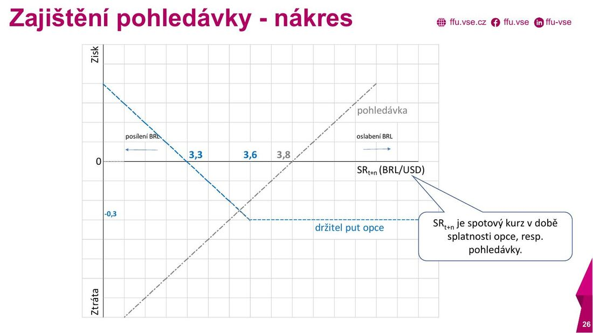
Slajd 26 (Šíma, Opce): pomocný nákres. Pohledávka (šedě, roste s kurzem, nula v 3,8) a držitel put opce (modře, −0,3 nad 3,6, klesá pod 3,6, nula v 3,3).
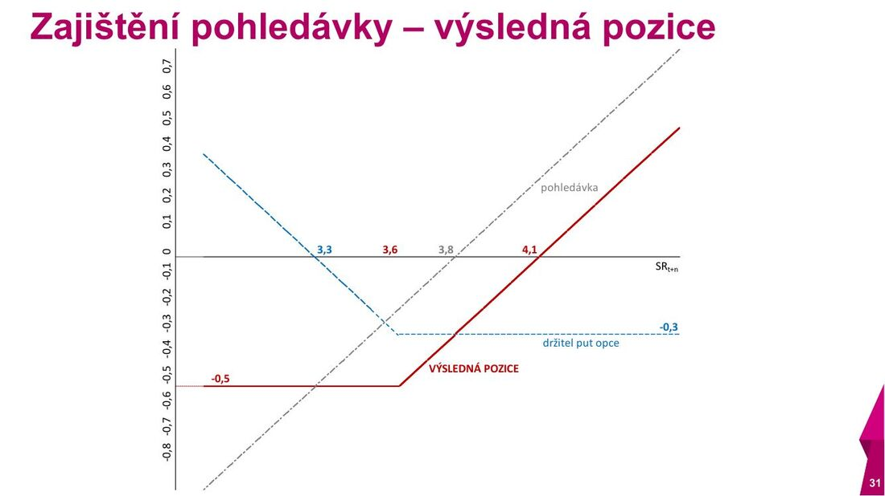
Slajd 31 (Šíma, Opce): čistá pozice exportéra (červeně). Vodorovná čára −0,5 do SP = 3,6, potom rostoucí přímka s nulou v 4,1.
Popis grafu čisté pozice: osa x je kurz BRL/USD při splatnosti, osa y zisk nebo ztráta na 1 USD. Do zlomu v SP = 3,6 (BRL posiluje, kurz klesá) je čistá pozice vodorovná na −0,5: put opce kompenzuje každou další ztrátu z pohledávky, zůstane jen rozdíl 0,2 mezi 3,8 a 3,6 plus prémie 0,3. Od 3,6 doprava (BRL slábne) pozice roste se sklonem +1 a exportér se podílí na výhodném vývoji, jen o prémii míň než bez zajištění. Vlevo od SP je pohledávka zajištěna, vpravo firma ponechává zisk z příznivého vývoje (slajd 46 to označuje jako „spekulaci“).
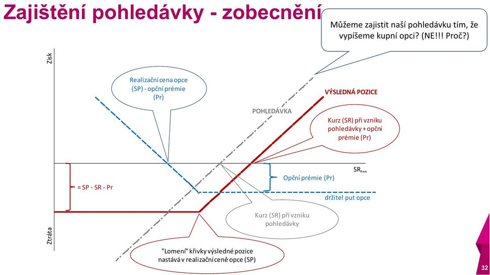
Slajd 32 (Šíma, Opce): zobecnění. Zlom v SP, vodorovná část na úrovni SP − SR − Pr, nulový bod rostoucí části v SR + Pr (kurz při vzniku pohledávky plus prémie).
Pod SP (opce využita): $\pi=SP-SR_0-Pr$ (konstantní, zde −0,5).
Nad SP (opce propadla): $\pi=SR_{t+n}-SR_0-Pr$ (zde $SR_{t+n}-4{,}1$).
Nejnižší efektivní příjem z jednotky měny: $SP-Pr$.
⚠️ Pozor (otázka na s. 32): pohledávku se nedá zajistit vypsáním kupní opce (short call). Exportér dostane prémii, ale při poklesu kurzu (posílení BRL), před kterým se chce chránit, call propadne a pohledávka dál ztrácí bez kompenzace. Jako zajištění funguje jen koupě put. Vysvětlení je doplněk, slajd jen klade otázku.
Závazek (importér)
Pohledávka (exportér)
Čeho se bojí
oslabení domácí měny (kurz roste)
posílení domácí měny (kurz klesá)
Nástroj
koupě call na cizí měnu
koupě put na cizí měnu
Tvar čisté pozice
klesající přímka, od SP vodorovná
vodorovná do SP, od SP rostoucí přímka
Vodorovná úroveň
$SR_0-SP-Pr$ (−1,0)
$SP-SR_0-Pr$ (−0,5)
Hranice efektivního kurzu
nejvýš $SP+Pr$ (38,0)
nejméně $SP-Pr$ (3,3)
Opce versus forward: zajištění závazku
Příklad 3 (zadání s. 4, slajdy 34–40): závazek 1,5 mil. GBP, opce, nebo forward? Možnost 1: call opce SP = 36,80, Pr = 1,20 CZK/GBP. Možnost 2: forwardový nákup za $FR=37{,}50$ CZK/GBP (1M). $SR_0=37{,}0$.
Forward fixuje kurz, takže čistá pozice je vodorovná:
Na každé libře „ztrácíme“ 0,50 CZK proti kurzu 37,0, ať kurz při splatnosti bude jakýkoli (s. 39–40). Celkem $0{,}5\cdot1{,}5\text{ mil.}=750\,000$ CZK.
Opce viz příklad 1: pod 36,8 platí $\pi=35{,}8-SR$, nad 36,8 platí $\pi=-1{,}0$.
Srovnání pro $SR_{t+n}=35{,}2$ (s. 36):
Opce: prémie $1{,}20\cdot1{,}5\text{ mil.}=1\,800\,000$ CZK, opce propadne, libry koupíme za $35{,}2\cdot1{,}5\text{ mil.}=52\,800\,000$ CZK. Celkem 54 600 000 CZK.
Opce: prémie $1\,800\,000$ + nákup za strike $36{,}8\cdot1{,}5\text{ mil.}=55\,200\,000$, celkem 57 000 000 CZK.
Forward: 56 250 000 CZK. Forward je levnější o $750\,000$ CZK.
Slajd 37 uvádí u forwardu 56 200 000 CZK, to je překlep, správně je 56 250 000 CZK ($37{,}5\cdot1{,}5$ mil.).
Bod zvratu (doplněk, vlastní výpočet): pod SP je efektivní cena opce $SR+Pr$. Rovná se forwardu v $SR=FR-Pr=37{,}5-1{,}2=36{,}3$. Pro $SR_{t+n}<36{,}3$ vychází lépe opce, pro $SR_{t+n}>36{,}3$ forward.
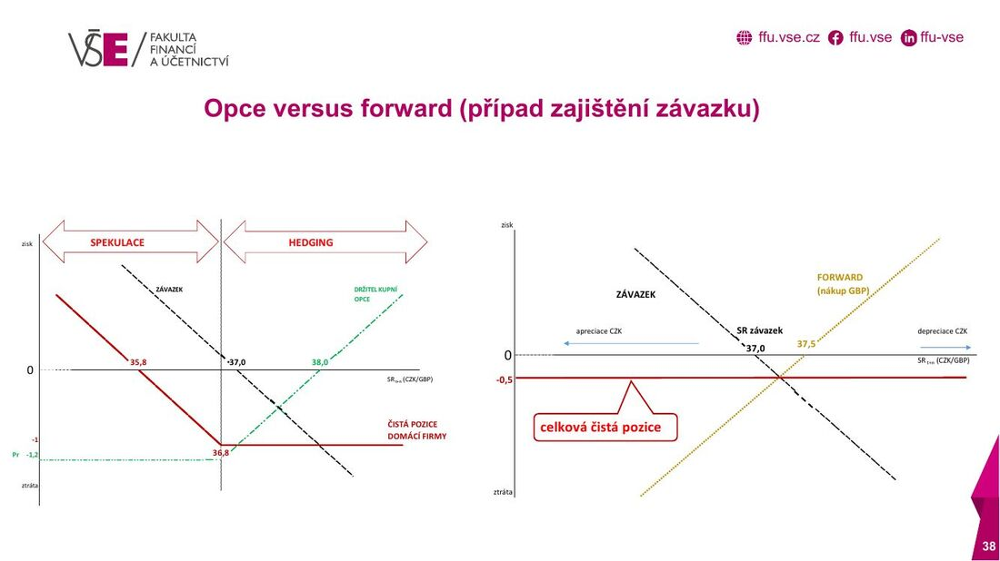
Slajd 38 (Šíma, Opce): vlevo čistá pozice s opcí (klesající přímka do 36,8, potom −1,0), vpravo s forwardem (vodorovná čára −0,5). Vpravo od zlomu opce chrání (hedging), vlevo firma drží zisk z posílení CZK (spekulace).
Popis a výklad: forward je vodorovná čára na −0,5: jistota, ale firma se vzdá zisku z posílení CZK. Opce je lomená čára: zisk zůstane, ale nejhorší výsledek je −1,0 (horší než forward) a prémie se platí předem. Čáry se protínají v 36,3 (doplněk). Čára forwardu leží na −0,5, protože forwardový kurz 37,5 je vyšší než spot 37,0 (forwardová přirážka vychází z úrokového diferenciálu, viz téma o forwardech). Doplněk.
⚠️ Jak vznikla čára forwardu (s. 39–40): příklad s $SR_{t+n}=35{,}2$: forward ztrácí $35{,}2-37{,}5=-2{,}30$ (mohli jsme koupit levněji), závazek zisk $37{,}0-35{,}2=+1{,}80$. Součet $-2{,}30+1{,}80=-0{,}50$. Pro každý kurz vyjde −0,50, proto je čára vodorovná.
Forward: $\pi_{FW}=(SR_{t+n}-SR_0)+(FR-SR_{t+n})=FR-SR_0=3{,}7-3{,}8=\mathbf{-0{,}1}$ (vodorovná čára). Za 100 000 USD je to $-10\,000$ BRL oproti kurzu 3,8.
Opce viz příklad 2: pod 3,6 platí $\pi=-0{,}5$, nad 3,6 platí $\pi=SR-4{,}1$.
Srovnání pro $SR_{t+n}=3{,}00$ (s. 44):
Opce: prémie $-0{,}3\cdot100\,000=-30\,000$ BRL, využijeme a prodáme za $3{,}6\cdot100\,000=360\,000$ BRL. Celkem 330 000 BRL.
Forward: 370 000 BRL. Forward je lepší o 40 000 BRL. Bez zajištění by příjem byl 300 000 BRL.
Srovnání pro $SR_{t+n}=4{,}50$ (s. 45):
Opce: opce propadne, prodáme za $4{,}5\cdot100\,000=450\,000$ BRL a odečteme prémii 30 000, tedy 420 000 BRL.
Forward: 370 000 BRL. Opce je lepší o 50 000 BRL.
Slajd 44 uvádí „příjmy bez zajištění: 300 000 CZK“, má být BRL (překlep).
Bod zvratu (doplněk, vlastní výpočet): nad SP je efektivní příjem opce $SR-Pr$. Rovná se forwardu v $SR=FR+Pr=3{,}7+0{,}3=4{,}0$. Pro $SR_{t+n}>4{,}0$ je lepší opce, pro $SR_{t+n}<4{,}0$ forward.
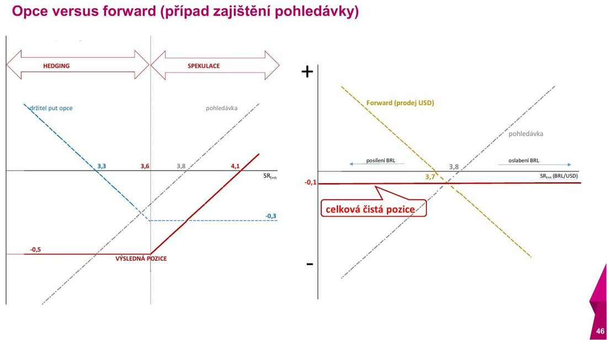
Slajd 46 (Šíma, Opce): vlevo čistá pozice s put opcí (−0,5 do 3,6, potom roste, nula v 4,1), vpravo s forwardem (vodorovná čára −0,1). Vlevo od zlomu je opce zajištění (hedging), vpravo ponechává zisk (spekulace).
Popis a výklad: forward je opět vodorovná čára, tentokrát jen −0,1, protože forwardový kurz 3,7 leží blízko spotu 3,8. Opce je při kurzu pod 3,6 „dražší“ (−0,5 proti −0,1 u forwardu), ale od kurzu 4,0 je lepší. Odpověď na otázku „opce, nebo forward?“ tedy závisí na tom, kam se kurz podle firmy pravděpodobně vyvine (viz tabulka níže).
⚠️ Pozor, forwardový kurz: u pohledávky firma prodává cizí měnu bance, použije se kurz bid. U závazku firma kupuje, použije se ask. Slajdy rozdíl pro zjednodušení nerozlišují (poznámky pod čarou s. 34, 42).
Výhody a nevýhody: opce versus forward
Měnová opce (kupující)
Forward
Právo / povinnost
právo, ne povinnost uplatnit
povinnost kontrakt splnit
Náklad
vždy se platí prémie
prémie se neplatí
Nejistá platba partnera
vhodná: když partner nezaplatí, opci nevyužijeme a ztratíme jen prémii
forward musíme splnit i tak
Vývoj kurzu
zachová příznivý vývoj (v teorii neomezeně), ztráta omezená
eliminuje nepříznivý i příznivý vývoj
Vypořádání
americká opce kdykoli do splatnosti
jen v jeden stanovený den
Tabulka podle s. 49.
Rozhodovací pravidlo (shrnutí z příkladů 3 a 4, doplněk):
Jistá platba, chci jistotu a žádnou prémii předem → forward. Rozdíl proti spotu je daný forwardovým kurzem.
Nejistá platba (např. výběrové řízení, partner nemusí zaplatit) → opce. Když platba nepřijde, ztratím jen prémii.
Chci být chráněn před nepříznivým kurzem, ale těžit z příznivého → opce (za cenu prémie).
Závazek: opce vyhrává, když kurz při splatnosti klesne pod $FR-Pr$. Pohledávka: opce vyhrává, když kurz stoupne nad $FR+Pr$.
Souhrn technik zajištění (s. 50):
Technika
Závazek v cizí měně
Pohledávka v cizí měně
Forward
forwardový nákup cizí měny
forwardový prodej cizí měny
Peněžní trh („syntetický forward“)
půjčit si domácí měnu, směnit na cizí, uložit do splatnosti
půjčit si cizí měnu, směnit na domácí, uložit do splatnosti
Měnová opce
nákup call opce
nákup put opce
Další užití opcí a opční strategie
Zajištění nabídky do výběrového řízení (s. 52): česká firma se hlásí o zakázku v Londýně, výsledek se dozví za 2 měsíce a po výhře musí hned začít, bude potřebovat 100 000 GBP. Bojí se oslabení CZK. Koupí call opci na 100 000 GBP. Když vyhraje, opci užije. Když ne, opci nechá propadnout a ztratí jen prémii. Forward by tu nebyl vhodný (musela by ho splnit i bez zakázky). Obdobně u akvizice zahraniční firmy.
Arbitráž a spekulace (s. 52–55).
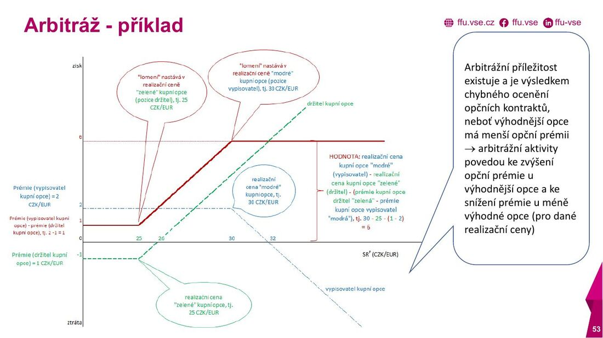
Slajd 53 (Šíma, Opce): arbitráž. Koupíme call se SP = 25 za prémii 1 a vypíšeme call se SP = 30 za prémii 2. Výsledná pozice (červeně) je všude kladná: minimálně +1 (kurz pod 25), maximálně +6 (kurz nad 30).
Arbitráž vznikne při chybném ocenění: výhodnější opce (call s nižším strikem 25) je levnější (prémie 1) než méně výhodná (strike 30, prémie 2). Kombinace dává zaručený zisk a arbitrážní obchody pak prémii výhodnější opce zvýší a méně výhodné sníží (s. 53). Interpretace čísel z obrázku (minimum +1, maximum +6) je doplněk.
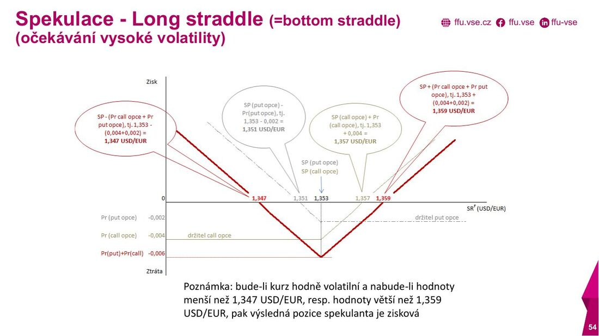
Slajd 54 (Šíma, Opce): long straddle (bottom straddle). Koupě call a put se stejným SP = 1,353 USD/EUR; prémie 0,004 + 0,002 = 0,006. Zisk, když kurz vyjede mimo pásmo 1,347 až 1,359.
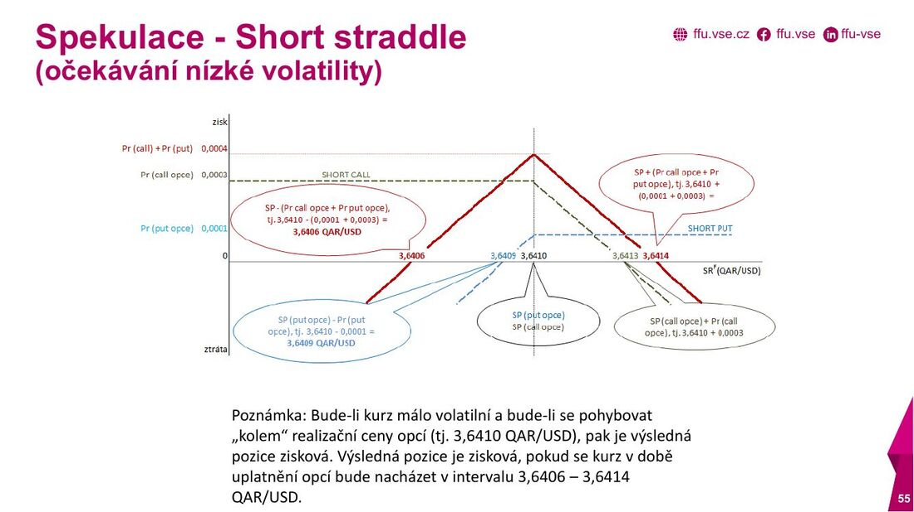
Slajd 55 (Šíma, Opce): short straddle. Prodej call a put se stejným SP = 3,6410 QAR/USD; zisk, když kurz zůstane v pásmu 3,6406 až 3,6414.
Long straddle (bottom straddle): koupě call i put se stejným SP. Hodí se při očekávání vysoké volatility. Ztráta je nejvýš součet prémií, zisk je mimo pásmo $SP\pm(Pr_{call}+Pr_{put})$ (s. 54).
Short straddle: prodej call i put se stejným SP. Hodí se při očekávání nízké volatility. Zisk je nejvýš součet prémií, kurz se musí držet kolem SP (s. 55).
⚠️ Pozor: straddle je spekulace na volatilitu, ne zajištění. Směr pohybu kurzu nehraje roli, rozhoduje jen jeho velikost. Short straddle má teoreticky neomezenou ztrátu.
Faktory ovlivňující opční prémii
Opční prémie = vnitřní hodnota + časová hodnota (s. 57). Podle Bigerova–Hullova modelu je $Pr=f(SP,\,SR,\,t,\,\sigma_{SR},\,IR_D,\,IR_F)$, tedy závisí na realizační ceně, spotu, době do splatnosti, volatilitě a úrokových sazbách (s. 71).
Vnitřní hodnota = výhodnost okamžitého uplatnění opce (výsledek uplatnění spolu s kompenzujícím obchodem na spotu). Nemůže být záporná (s. 59–61).
Opce
Vztah SR a SP
Vnitřní hodnota
Název
Call
SR > SP
$SR-SP$
ITM (v penězích)
SR = SP
0
ATM (na penězích)
SR < SP
0
OTM (mimo peníze)
Put
SR < SP
$SP-SR$
ITM
SR = SP
0
ATM
SR > SP
0
OTM
Americká opce: prémie nemůže být nižší než vnitřní hodnota (jinak by šlo ihned arbitrážovat mezi opcí a spotem).
Evropská opce: prémie může být nižší než vnitřní hodnota, protože ji lze uplatnit jen ve splatnosti (s. 59).
Časová hodnota = prémie − vnitřní hodnota. Odráží pravděpodobnost, že opční právo bude využito, a „cenu času“ do splatnosti (s. 63).
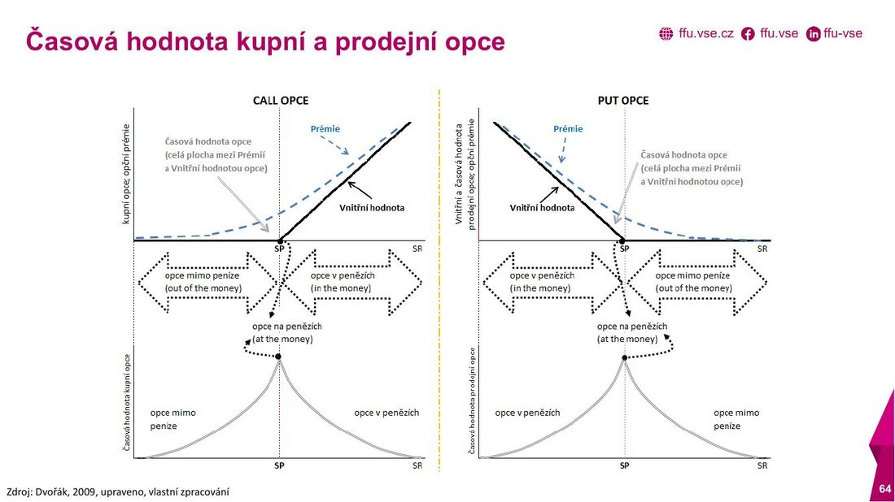
Slajd 64 (Šíma, Opce): nahoře prémie (modře) a vnitřní hodnota (černě), dole časová hodnota. Je nejvyšší, když je opce na penězích (SR ≈ SP), a klesá s tím, jak je opce hluboko v penězích nebo hluboko mimo peníze.
Intuice (s. 65–66): hluboko OTM (např. SP 27, spot 20) je téměř jisté, že opce propadne, a časová hodnota je nízká. Hluboko ITM (SP 27, spot 33) je téměř jisté, že opce bude uplatněna, a prémie se blíží vnitřní hodnotě, časová hodnota je opět nízká. Kolem SP (26,95 nebo 27,03) je to „padesát na padesát“, nejistota i časová hodnota jsou maximální.
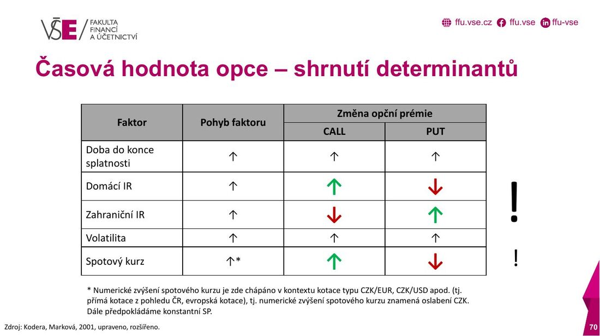
Slajd 70 (Šíma, Opce): jak se mění prémie call a put opce, když faktor roste (kotace CZK/EUR, SP konstantní). Úrokové sazby jsou na slajdu označené vykřičníkem, protože se na ně nejčastěji ptají.
Faktor ↑
Prémie call
Prémie put
Proč
Doba do splatnosti
↑
↑
víc času na příznivý vývoj, ztráta držitele je omezena prémií (s. 67)
Volatilita
↑
↑
širší rozdělení kurzu, vyšší šance na uplatnění (s. 68)
Domácí úroková sazba $IR_D$
↑
↓
call: držitel může déle držet levnější domácí měnu (s. 69)
Zahraniční úroková sazba $IR_F$
↓
↑
opačně než $IR_D$ (s. 69)
Spotový kurz (CZK/EUR ↑, SP konst.)
↑
↓
call je víc v penězích, put míň (s. 70)
⚠️ Pozor: směr vlivu úrokové sazby se u call a put liší. Zapamatuj: úrokový diferenciál $IR_D-IR_F$ roste → call dražší, put levnější. Doba do splatnosti a volatilita zvyšují prémii obou typů. Spotový „↑“ znamená oslabení CZK (kotace CZK/EUR).
Black–Scholes a řecká písmena
Blackův–Scholesův model pro evropské opce slajdy jen naznačují a výslovně uvádějí, že je to rozšíření textu, které není nutné umět (s. 71–72). Řecká písmena (Greeks) měří vliv změny jednoho faktoru na prémii, ostatní faktory se nemění (s. 73):
Delta: citlivost prémie na malou změnu kurzu.
Gamma: citlivost delty na změnu kurzu („delta delty“).
Theta: změna prémie s kratší dobou do splatnosti (o jeden den).
Vega: citlivost na změnu volatility (o jeden procentní bod).
Rho: citlivost na změnu úrokové sazby.
Literatura z prezentace (s. 75): Bekaert–Hodrick, International Financial Management (2012); Dvořák, Deriváty (2009); Jílek, Finanční a komoditní deriváty v praxi (2010); Kodera–Marková, Devizové obchody (2001); Durčáková–Mandel, Mezinárodní finance (2007).
Shrnutí:
Opce dává držiteli právo, ne povinnost. Prémie (cena) se platí vždy, strike je kurz plnění. Call = právo koupit bazickou měnu, put = právo prodat. Vypisovatel má povinnost a dostane prémii.
Payoff long call: $\max(SR-SP,0)-Pr$, nulový bod SP + Pr. Long put: $\max(SP-SR,0)-Pr$, nulový bod SP − Pr. Ztráta držitele je omezena prémií.
Závazek v cizí měně zajistí koupě call. Čistá pozice: klesající přímka do SP, od SP vodorovná na $SR_0-SP-Pr$. Příklad: 37,0 − 36,8 − 1,2 = −1,0 CZK/GBP, nejhorší cena 38,0.
Pohledávku v cizí měně zajistí koupě put. Čistá pozice: vodorovná do SP na $SP-SR_0-Pr$, od SP rostoucí přímka. Příklad: 3,6 − 3,8 − 0,3 = −0,5 BRL/USD, nejnižší kurz 3,3.
Vypsáním opce zajistit nelze: dostaneš jen prémii a před nepříznivým kurzem nejsi chráněn.
Forward: čistá pozice vodorovná (závazek: 37,0 − 37,5 = −0,5; pohledávka: 3,7 − 3,8 = −0,1), žádná prémie, povinnost plnit, vzdání se příznivého vývoje.
Závazek (1,5 mil. GBP): kurz 35,2 → opce 54,6 mil. CZK, forward 56,25 mil. Kurz 38,6 → opce 57,0 mil., forward 56,25 mil. Bod zvratu 36,3.
Pohledávka (100 000 USD): kurz 3,00 → opce 330 000 BRL, forward 370 000. Kurz 4,50 → opce 420 000, forward 370 000. Bod zvratu 4,0.
Opce se hodí při nejisté platbě a když chceme ponechat příznivý vývoj. Forward při jisté platbě a bez prémie. Další použití: výběrové řízení, arbitráž, straddle (long = vysoká volatilita, short = nízká).
Prémie = vnitřní hodnota + časová hodnota. Časová hodnota je nejvyšší u opce na penězích. Delší splatnost a vyšší volatilita zvyšují prémii call i put. Vyšší $IR_D$ zvyšuje prémii call (a snižuje put), vyšší $IR_F$ naopak.
4. Technologie a motivace obchodování firem na devizovém trhu
Přednáška 19. 10. · Karel Brůna · zdroj: 4. Technologie a motivace obchodování firem na devizovém trhu (2._Technologie_a_motivace_obchodovani_firem_na_devizovem_trhu.pptx, slajdy 1–14), doplňky z BIS Working Papers No 1094
Hlavní oblasti a rozvoj elektronických obchodních systémů
Přednáška má tři oblasti: technologické změny v obchodování, hlavní obchodní platformy a algoritmické a vysokofrekvenční obchodování (s. 2). Společné téma je, že devizový trh (téma 1: OTC, bez centrální burzy) se za posledních 30 let výrazně zelektronizoval. Slajd 3 uvádí pět směrů vývoje:
roste podíl elektronických transakcí (místo telefonu a telexu obchody zadává počítač),
vznikají e-brokeři a multibankovní obchodní systémy (jedna platforma, více bank),
vznikají platformy pro algoritmické a vysokofrekvenční obchodování,
rozvíjí se prime-brokerage (banka půjčuje své úvěrové jméno nebankovním hráčům, viz níže),
vznikají webové obchodní systémy pro retailové klienty (s. 3).
Jak číst zbytek tématu: slajd 4 je „mapa“ trhu a všechno ostatní jsou její části. Platformy (s. 5–9) popisují, kde se obchoduje, retail a HFT (s. 10–13) popisují, kdo nově obchoduje, a latence (s. 14) popisuje, proč na rychlosti záleží.
Model devizového trhu (BIS Working Paper 1094)
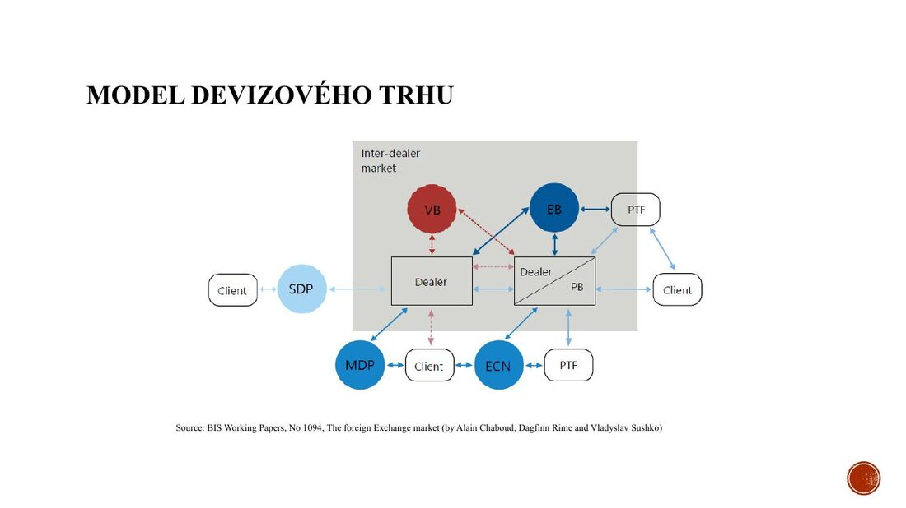
Slajd 4 (Brůna): model devizového trhu. Šedá oblast = trh mezi dealery, okolo ní trh dealerů se zákazníky. Zdroj: Chaboud, Rime, Sushko, BIS WP No 1094, obr. 3c.
Slajd 4 zkratky nevysvětluje. Zkratky, rozlišení voice × elektronické a historii níže jsem převzal z doplněk: Chaboud, A., Rime, D., Sushko, V. (2023): The foreign exchange market, BIS Working Papers No 1094, kap. 2–3, obr. 3 (PDF). Obrázek na slajdu odpovídá panelu (c), tedy stavu za poslední dekádu.
Dvouvrstvý trh:
vnitřní vrstva = inter-dealer market (šedý obdélník): dealerské banky obchodují mezi sebou, aby řídily své pozice (zásoby měn) a ceny,
vnější vrstva = dealer-to-customer market (vše mimo šedou plochu): dealeři obchodují se zákazníky, tj. s klienty (firmy, investiční fondy, menší banky) a s PTF.
Kdo jsou účastníci (zkratky na obrázku)
Zkratka
Význam
Co dělá
Dealer
dealerská banka (market maker, téma 1)
kotuje bid/ask klientům i ostatním dealerům a nese riziko z držené pozice. Zákazníkům vydělává spreadem a z jejich pokynů se dozvídá informace o trhu.
Client
zákazník (liquidity consumer)
firma, investiční fond, správce aktiv, menší banka. Nefinanční firma je tedy klient, který cenu přijímá (price taker, téma 1).
VB
voice broker
zprostředkuje obchod mezi dealery po telefonu; nejstarší nepřímá cesta (červené čárkované šipky = hlas).
EB
electronic broker
elektronická platforma pro obchod mezi dealery: EBS a Reuters (dnes Refinitiv Matching), od začátku 90. let. V obrázku jsou to „primary CLOB“.
PB
prime broker
dealerská banka, která poskytuje úvěrové zázemí (viz níže). Na obrázku je dealer rozdělen úhlopříčkou: stejná banka je zároveň dealer i prime broker.
PTF
principal trading firm
nebankovní obchodní firma, obchoduje vlastním jménem a často vysokofrekvenčně (HFT). Obchoduje na EB i na ECN přes prime brokera a streamuje ceny klientům.
SDP
single-dealer platform
platforma jedné banky, přes kterou klient obchoduje jen s touto bankou (např. J.P. Morgan eXecute, UBS Neo).
MDP
multi-dealer platform
platforma s více dealery: klient pošle žádost o cenu (RFQ) několika bankám najednou a vybere nejlepší (např. 360T, FXall, Currenex).
ECN
electronic communication network
sekundární obchodní síť (např. Cboe FX, LMAX); klienti na ní obchodují na ceny více dodavatelů likvidity, často v podobě order booku nebo streamovaných cen.
Všechny zkratky výše: doplněk z BIS WP 1094, obr. 3 a oddíl 3.1. Příklady platforem pocházejí z pozn. 15–17 stejného dokumentu.
Jak spolu vrstvy souvisejí (čtení obrázku)
Klient → dealer. Klient může jít za dealerem třemi cestami: přímo (telefon, chat; čárkovaná šipka), přes SDP jedné banky (vlevo na obrázku), nebo přes MDP (dole), kde mezi sebou banky soutěží o jeho pokyn. Barva šipky v obrázku odlišuje hlasový a elektronický způsob provedení.
Dealer ↔ dealer. Dealeři obchodují přímo mezi sebou (šipka mezi dvěma dealery) nebo nepřímo přes brokera: VB (hlasově) a EB (elektronicky). EB je dnes hlavní místo objevování ceny.
PTF a ECN vstupují do obou vrstev. PTF obchoduje na EB (uvnitř šedé oblasti) přes prime brokera, a zároveň streamuje ceny klientům přes ECN (vnější vrstva). Hranice mezi „interdealer“ a „zákaznickým“ trhem je proto dnes rozmazaná.
Prime broker je spojovací článek: nebankovní hráč (hedge fond, PTF) se díky němu dostane k mnoha bankám a platformám, i když s nimi nemá vlastní úvěrovou linku (viz box níže).
Prime brokerage (doplněk, BIS WP 1094, s. 6): FX obchod se vypořádává za 2 pracovní dny (T+2), takže je to ve skutečnosti úvěr protistraně. Banky proto dlouho obchodovaly jen mezi sebou. Prime broker (velká banka) umožní nebankovnímu klientovi obchodovat s mnoha protistranami pod svým úvěrovým jménem: protistrana nese riziko prime brokera a ten riziko klienta. Díky tomu se dostaly na trh PTF a hedge fondy.
Intuice: jak trh vznikl. V 90. letech byl trh jednoduchý: zákazníci telefonovali bankám (vnější vrstva), banky si vyrovnávaly pozice mezi sebou (vnitřní vrstva, nejdřív voice brokeři). Reuters a EBS přinesly elektronické brokery, kde se utvářela referenční cena. Kolem roku 2000 přibyly SDP a MDP, tedy elektronizace vnější vrstvy. Dnes přibyly ECN a PTF, které banky ve vnitřní i vnější vrstvě konkurenčně doplňují (BIS WP 1094, oddíl 3.1, obr. 3a–c).
⚠️ Pozor:
Dealer × client není rozdíl „banka × nebanka“. Menší banka nebo hedge fond je pro dealera klient; PTF může být současně dodavatel i spotřebitel likvidity.
PB není samostatný typ účastníka vedle dealera, je to role dealerské banky (na obrázku jedno pole rozdělené úhlopříčkou).
V testu bývá otázka na význam zkratek a na to, kudy se dostane firma k ceně: nefinanční firma jde typicky přes SDP nebo MDP, ne přes EB.
Obchodní platformy
Direct trading: obchodní konverzace
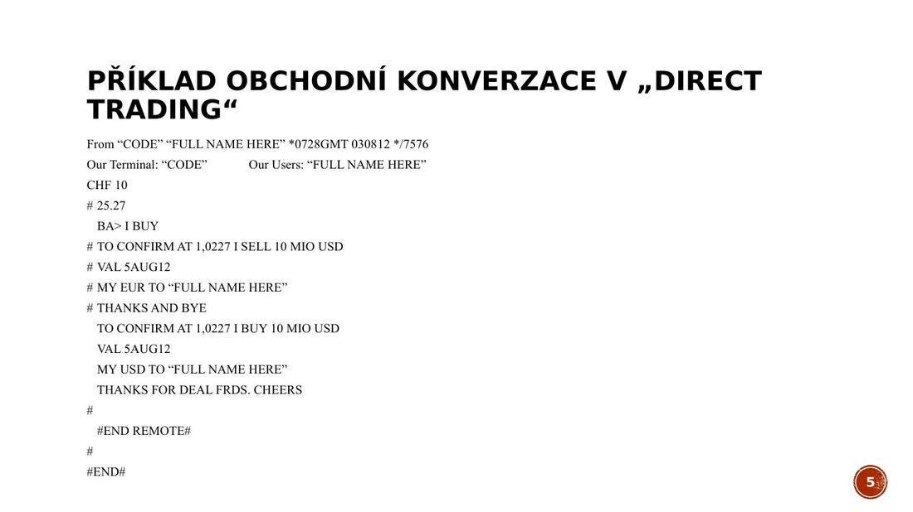
Slajd 5 (Brůna): příklad konverzace v „direct trading“. Dvě strany si textem sdělí cenu a potvrdí obchod.
Direct trading je původní bilaterální způsob obchodování: dealer s dealerem nebo s klientem komunikuje přímo, dříve telefonem, později textovým terminálem (např. Reuters Direct Dealing; doplněk, BIS WP 1094, pozn. 12). Konverzace na slajdu má vždy stejnou kostru:
záhlaví: kód a jméno terminálu, uživatele, čas (GMT) a datum,
dotaz a cena: tazatel zadá měnu a objem v milionech (CHF 10), dealer odpoví kotací (25.27; dealeři často uvádějí jen small figure, téma 1),
rozhodnutí: tazatel cenu přijme (I BUY),
potvrzení: TO CONFIRM AT 1,0227 I SELL 10 MIO USD, tj. kurz, směr, objem; VAL 5AUG12 = datum valuty (vypořádání); MY EUR TO … = kam má druhá strana poslat peníze (platební instrukce),
rozloučení (THANKS AND BYE); druhá strana pošle zrcadlové potvrzení (I BUY místo I SELL).
⚠️ Pozor: čísla na slajdu nesedí do jednoho obchodu (cena 25,27 u CHF, kurz 1,0227, valuta v neděli 5. 8. 2012). Je to pravděpodobně upravený ukázkový přepis. Odnes si strukturu konverzace (cena → přijetí → potvrzení kurzu, objemu, valuty a platebních instrukcí), ne konkrétní čísla.
EBS Market a Cboe FX: dvě ukázky platforem
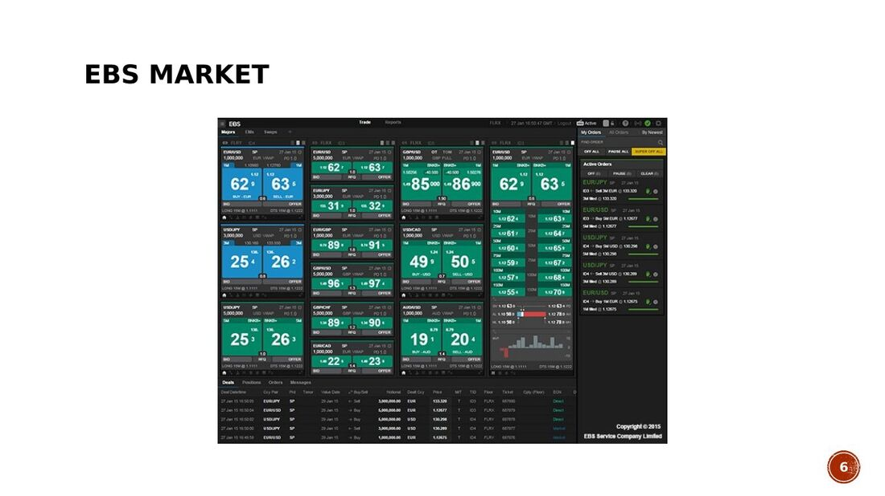
Slajd 6 (Brůna): obrazovka EBS Market. Dlaždice s páry (EUR/USD, USD/JPY, GBP/USD…), každá má dvě ceny a objem; vpravo aktivní pokyny, dole proběhlé obchody.
EBS Market je elektronický broker pro obchody mezi dealery a patří mezi tzv. primární CLOB (Central Limit Order Book, centrální kniha pokynů: pokyny od všech účastníků se řadí podle ceny a času). Kdo nabídne nejlepší cenu, je spárován první. EBS je hlavní místo pro EUR/USD, USD/JPY a EUR/CHF, Refinitiv Matching pro GBP/USD, USD/CAD, AUD/USD a většinu měn rozvíjejících se trhů (doplněk, BIS WP 1094, pozn. 13). Co z obrazovky vyčíst: velká čísla uprostřed dlaždice jsou small figure bid a ask (např. „62 | 63“ u 1,1262/1,1263), objem nad nimi udává velikost kotace (1M, 5M, 3M). Malá číslice vedle velkého čísla je zlomek pipu (odhad z obrázku).
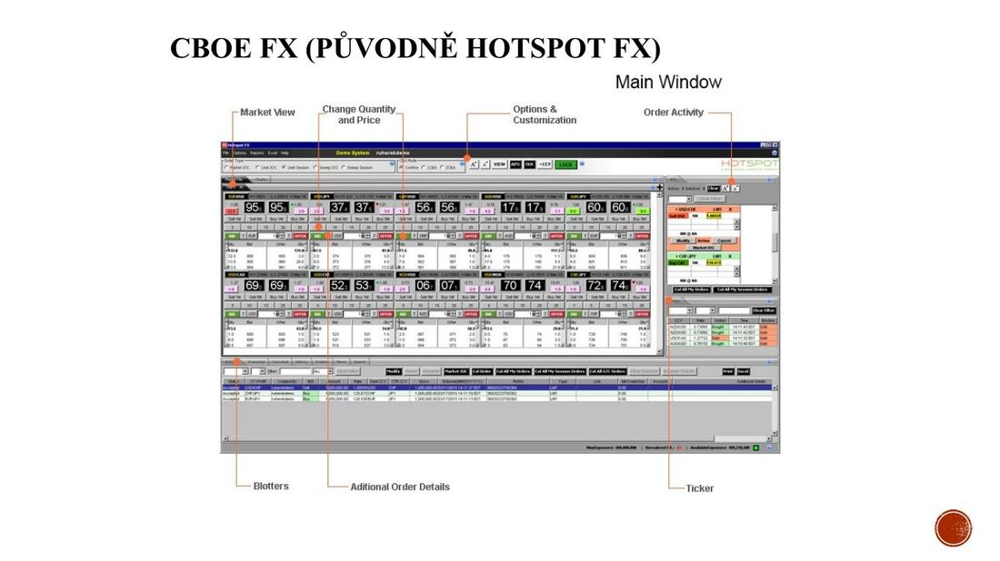
Slajd 7 (Brůna): hlavní okno Cboe FX (původně Hotspot FX). Popisky: Market View (ceny), Change Quantity and Price, Options & Customization, Order Activity, Blotters, Ticker.
Cboe FX (původně Hotspot FX, dnes patří burzové skupině Cboe) je příklad sekundární ECN. Uživatel vidí zpracované ceny u každého páru, může okamžitě změnit objem a cenu pokynu a sleduje seznam svých pokynů a proběhlých obchodů (blotter) a proud obchodů na trhu (ticker). BIS řadí CboeFX mezi sekundární ECN (pozn. 16), tedy platformy mimo vnitřní vrstvu primárních CLOB. Na přednášku jde hlavně o vidět, jak platformy vypadají, ne o zapamatování tlačítek.
Taxonomie obchodních míst
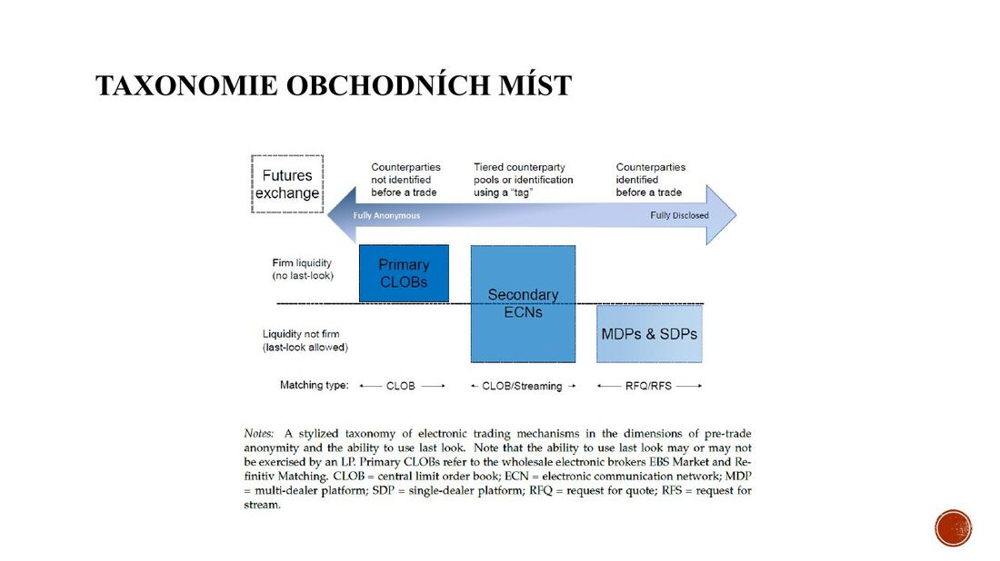
Slajd 8 (Brůna): taxonomie obchodních míst. Vodorovně míra anonymity před obchodem, svisle „pevnost“ likvidity (firm × last look), dole typ párování. Zdroj: BIS WP 1094, obr. 6.
Taxonomie třídí platformy podle dvou dimenzí:
anonymita před obchodem (vodorovná osa): od fully anonymous (protistrany se před obchodem neznají) po fully disclosed (protistrany jsou známy),
pevnost likvidity (svislá osa): firm liquidity (bez last look) × liquidity not firm (last look povolen).
Místo
Anonymita
Likvidita
Párování
Futures burza (stranou)
nejvyšší (protistranou je burza)
pevná
burzovní
Primary CLOB (EBS Market, Refinitiv Matching)
plně anonymní
pevná (bez last look)
CLOB
Secondary ECN
částečná: skupiny protistran nebo „tag“
většinou s last look, výjimky existují
CLOB / streaming
MDP a SDP
plně známá protistrana
není pevná (last look)
RFQ / RFS
Last look: dealer (přesněji jeho počítač) dostane pokyn klienta k obchodu na svou kotaci a ještě chvíli (milisekundy) se rozhoduje, zda ho přijme. Zjišťuje, jestli má klient dost úvěrové kapacity a jestli kotace nezastarala. Proto na takové platformě není jistota, že obchod na ukázanou cenu proběhne (doplněk, BIS WP 1094, oddíl 3.3).
RFQ a RFS (doplněk, BIS WP 1094, pozn. 14):request for quote = klient pošle jednorázovou žádost o cenu jednoho obchodu více dealerům; request for stream = klient žádá průběžný proud cen pro danou velikost po určitou dobu (např. celý den).
Co si odnést: čím anonymnější místo, tím pevnější likvidita: když na anonymní CLOB vidíš cenu, můžeš na ni opravdu obchodovat. Proto jsou ceny z primárních CLOB stále referenční pro celý trh, i když přes ně prochází stále menší část objemu. Naopak u SDP a MDP je protistrana známá, takže si dealer může dovolit „poslední pohled“ a klientům nabídnout cenu na míru. Pro firmu je důležité vědět, že pevná cena a obchod za cenu na obrazovce nejsou totéž.
⚠️ Pozor: last look smí být použit, nemusí být použit (BIS: „may or may not be exercised“). Slajd tedy vyznačuje možnost kvůli povaze platformy, ne zaručené odmítnutí obchodu. Za přijatelné se dnes považuje jen krátké ověření ceny a platnosti; zdržení kvůli čekání na další pohyb ceny („additional hold time“) kritizuje FX Global Code (2021).
Hlavní hráči podle Euromoney
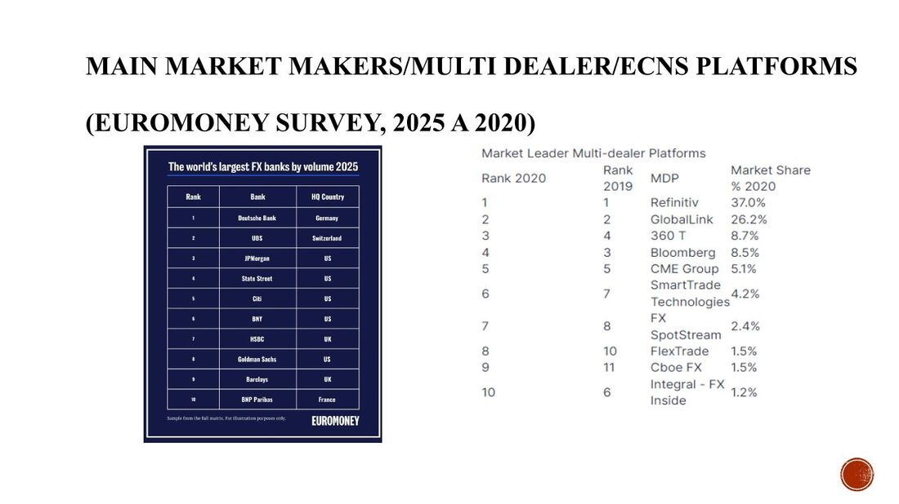
Slajd 9 (Brůna): vlevo největší FX banky podle objemu (Euromoney, 2025), vpravo vedoucí multi-dealer platformy (2020, podíl na trhu).
Pořadí
Banky (Euromoney 2025)
MDP (rok 2020)
Podíl
1
Deutsche Bank (Německo)
Refinitiv
37,0 %
2
UBS (Švýcarsko)
GlobalLink
26,2 %
3
JPMorgan (USA)
360T
8,7 %
4
State Street (USA)
Bloomberg
8,5 %
5
Citi (USA)
CME Group
5,1 %
6
BNY (USA)
SmartTrade Technologies
4,2 %
7
HSBC (Velká Británie)
FX SpotStream
2,4 %
8
Goldman Sachs (USA)
FlexTrade
1,5 %
9
Barclays (Velká Británie)
Cboe FX
1,5 %
10
BNP Paribas (Francie)
Integral – FX Inside
1,2 %
Z tabulky plyne koncentrace: dvě největší MDP (Refinitiv a GlobalLink) mají dohromady 63,2 % a prvních pět 85,5 % trhu MDP. Podobně i likvidita je soustředěna u malé skupiny bank (téma 1: klesá počet market makerů).
⚠️ Pozor: levá tabulka je podle poznámky na obrázku jen vzorek z úplné matice, pouze pro ilustraci. Neučit se pořadí jmen nazpaměť. Euromoney průzkum navíc sbírá hlasy firem, které se v něm samy snaží uspět, takže jde o orientační údaj (BIS WP 1094, pozn. 10). Dále: kontext slajdu je „market makeři / platformy“, ne tržní podíl bank na obratu. Platformy napravo jsou z roku 2020, ne 2025.
Pozice retailových obchodníků
Podíl prudce vzrostl na cca 10 % obratu trhu; v Japonsku je to kolem 30 % (s. 11).
Obchodují přes internetové platformy určené pro tento segment: FXCM, FX Dealer Direct, Gain Capital, OANDA, SaxoBank, IG Markets, Gaitame (s. 11).
Retail aggregators jsou zprostředkovatelé a zároveň market makeři: sbírají ceny od více dodavatelů likvidity a retailovému klientovi ukazují nejlepší z nich (s. 11; viz agregátor v tématu 1).
Obchodují pákově, přes margin účty a na úvěr (s. 11). S malým vkladem (marží) drží pozici mnohem větší, takže zisk i ztráta jsou násobeny pákou.
⚠️ Pozor na rozdíl od literatury: slajd udává pro retail cca 10 % trhu. BIS WP 1094 (pozn. 9) uvádí, že retail představuje obvykle velmi malou část aktivity velkoobchodního trhu a Japonsko je výjimka. Pro test ber číslo ze slajdu (10 %, Japonsko 30 %), ale nespojuj ho se segmentem nefinančních firem. Ty tvoří jen asi 5 % obratu (téma 1).
Algoritmické (AT) a vysokofrekvenční obchodování (HFT)
Algoritmické obchodování (AT): automatické generování obchodů v určitém čase a objemu podle nastaveného algoritmu, tj. podle určité účelové funkce a omezení (s. 12). Počítač tedy sám rozhoduje, kdy, kolik a za kolik obchodovat.
Vysokofrekvenční obchodování (HFT): speciální typ AT s velmi vysokým počtem obchodů (s. 12). Hlavní obchodní systémy pro něj vytvořily vlastní platformy: CME v roce 2002, EBS v roce 2004 (s. 12).
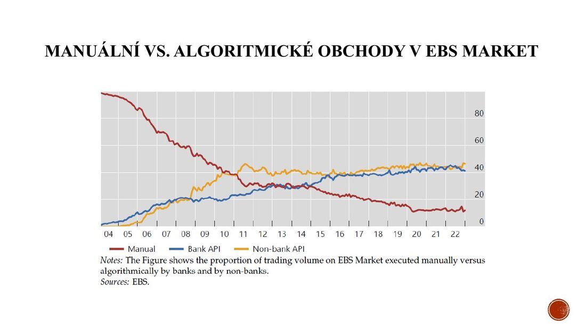
Slajd 10 (Brůna): podíl objemu na EBS Market zadaný ručně (Manual) a algoritmicky bankami (Bank API) a nebankami (Non-bank API), 2004–2022, v %. Zdroj: EBS, BIS WP 1094, obr. 7.
Co z grafu vyčíst (hodnoty jsou odhady z obrázku):
Manuální obchody (červená) klesly z téměř 97 % v roce 2004 na zhruba 10–15 % v roce 2022. Na začátku byli na EBS jen bankovní dealeři a obchodovali ručně přes speciální klávesnici.
Bank API (modrá) začíná 2004 (EBS umožnil přímé propojení počítače s platformou), roste a od roku 2015 je kolem 40 %.
Non-bank API (žlutá) začíná 2005, kdy nebanky dostaly přístup přes prime brokery. Roste nejrychleji a kolem 2011 dosáhne asi 45 %; od roku 2015 je spolu s bank API na zhruba 40 % objemu.
Křížení kolem 2010–2011: manuální obchody už nejsou největší skupinou. Od té doby dominuje algoritmické obchodování.
doplněk (BIS WP 1094, oddíl 4 a pozn. 20–21): většina non-bank API jsou PTF, které algoritmem automatizují rozhodnutí i provedení obchodu. Bank API je často jen automatizované provedení, zatímco rozhodnutí učinil člověk. Pokles manuálu na jaře 2020 odpovídá práci z domova během covidu.
⚠️ Pozor: graf ukazuje podíl na jedné platformě (EBS), ne na celém trhu, a podíl na objemu, ne počet účastníků.
Základní charakteristiky HFT (s. 13)
vysoký počet pokynů a rychlé rušení pokynů (většina pokynů nikdy nevede k obchodu),
zisk z nákupu a prodeje jako prostředník, resp. market maker (HFT firma kotuje bid/ask a vydělává spread),
malé nebo nulové otevřené pozice na konci dne (nenese noční riziko),
velmi krátká doba držení aktiva (sekundy a méně),
nízká marže z jednoho obchodu, vydělává na množství,
požadavek na vysoce likvidní trhy a instrumenty: spotové obchody, pár EUR/USD,
požadavek nízké latence a umístění výpočetní techniky co nejblíže trhům: Velká Británie pro EBS a Reuters, USA pro multibankovní systémy.
Proč právě spot EUR/USD: HFT vydělává velmi malý spread na velmi mnoho obchodech. Funguje to jen tam, kde je velký objem, těsný spread a snadno se vyrovná pozice (téma 1: EUR/USD je nejobchodovanější pár). Servery u matching enginu zkracují cestu signálu, a tím i latenci. Podle BIS (WP 1094, pozn. 7) jsou hlavní datová centra LD4 (Londýn), NY4 (New York), TY3 (Tokio) a SG1 (Singapur) doplněk.
⚠️ AT × HFT: každé HFT je AT, ale ne každé AT je HFT. AT může být i jen algoritmus, který rozloží velký obchod firmy do několika menších v čase. HFT se pozná podle vysokého počtu obchodů, krátké doby držení a nulové pozice na konci dne. V terminologii BIS patří HFT hlavně mezi PTF (principal trading firms).
Network latency
Network latency: míra zpoždění mezi nastáním události (změna ceny, uskutečnění nebo zrušení významného, cenotvorného obchodu) a získáním informace o ní (komunikace mezi dvěma uzly sítě) (s. 14).
Proč je zpoždění riziko. Zpoždění oproti reálnému stavu trhu vytváří nové riziko (s. 14):
riziko kotace mimo trh (zastaralá cena, kterou jsem ještě neaktualizoval),
riziko arbitráže (rychlejší hráč využije mou starou cenu),
riziko chybné spekulativní nebo zajišťovací strategie (rozhoduji podle stavu, který už neplatí).
Od čeho latence závisí (s. 14). Architektura obchodních systémů:
synchronizace dat mezi regiony (books synchronization),
použitá technologie komunikace mezi klientem a systémem (trading protocols),
způsob ověřování úvěrové kapacity protistrany,
stáří obchodní infrastruktury.
Dále působí vzdálenost uzlů, objem přenášených dat, počet prvků, přes které data procházejí a zpracovávají se, kapacita zpracování a efektivnost distribuce dat. Latence je náhodná veličina a je obtížné ji předvídat, což komplikuje časovou a cenovou prioritu pokynů (kdo dřív přišel, ten je dřív spárován; kvůli zpoždění nemusí platit pořadí, v jakém pokyny skutečně vznikly).
Příklad (vlastní modelový, nejde o údaj ze slajdů): dealer kotuje EUR/USD 1,1000 / 1,1002. Na trhu se vyskytne zpráva a cena skočí o 5 pipů nahoru, ale dealerův systém se o tom dozví o několik milisekund později. Rychlý HFT obchodník to zjistí dřív a koupí EUR za starou ask cenu 1,1002, i když nová ask cena by už byla 1,1007. Dealer prodal o 5 pipů levněji, než měl: realizoval se latency arbitrage. Tomu se banky brání např. last look (viz taxonomie) a platformy speed bumps (doplněk, BIS WP 1094, oddíl 4: ParFX 2013, EBS a Refinitiv 2013–2014).
Proč to patří do tématu o firmách: latence a HFT jsou ukázkou, že cena, kterou vidí firma na obrazovce, je výsledkem soutěže strojů. Firma s podnikovými platbami v řádu minut nebo dnů rychlost neřeší, ale měla by vědět, že kotace s last look nemusí být plně závazná a že spread platí i za riziko, které dealer nese vůči rychlejším hráčům.
Proč firmy obchodují na devizovém trhu
doplněk: slajdy samotné nemají samostatný výklad motivů nefinančních firem, i když je téma v názvu a ve studijním plánu (klíčové pojmy plánu jsou návrh, ne potvrzený požadavek přednášejícího). Níže jen krátký souhrn z BIS WP 1094, oddíl 2.2, a z tématu 1.
Platby a inkasa v cizí měně (obchodní motiv): nefinanční zákazníci, především firmy, používají FX trh k podpoře hlavní činnosti, zejména mezinárodního obchodu.
Zajištění kurzového rizika (hedging, téma 2 a 3: forwardy, opce).
Finanční motivy (investice a financování v cizí měně), které u nefinančních firem hrají menší roli. Většinu obratu trhu dnes tvoří finanční zákazníci (v BIS WP 1094 více než 50 %), nefinanční zákazníci tvoří méně než 10 %.
Technologie z této kapitoly určují, jakým kanálem se firma k ceně dostane: typicky přes SDP své banky nebo přes MDP, které umožní porovnat ceny více bank (RFQ). To odpovídá obrázku ze slajdu 4: firma je „client“ ve vnější vrstvě a primární CLOB (EB) je pro ni zprostředkovaně přítomen jen jako zdroj referenční ceny. Přímý přístup k EB mají dealeři a PTF přes prime brokera.
Shrnutí:
Trh se zelektronizoval: e-brokeři, multibankovní systémy, platformy pro AT a HFT, prime brokerage a webové systémy pro retail (s. 3).
Model trhu (s. 4): inter-dealer vnitřní vrstva (dealeři, VB, EB, PB) a dealer-to-customer vnější vrstva (klienti, SDP, MDP, ECN, PTF). Vrstvy se prolínají hlavně kvůli PTF a prime brokerage.
Platformy se liší anonymitou a pevností likvidity (s. 8): primary CLOB (EBS, Refinitiv) = anonymní, pevná; secondary ECN (Cboe FX) = střed; MDP a SDP = známá protistrana, last look.
Last look = krátká poslední kontrola dealera před přijetím obchodu (úvěrová kapacita, zastaralá cena).
Na EBS klesl podíl ručních obchodů z cca 97 % (2004) na 10–15 % (2022); zbytek dělí zhruba rovným dílem bank API a non-bank API (s. 10).
Retail: cca 10 % obratu (Japonsko 30 %), pákové obchodování přes margin účty, retail aggregators (s. 11).
AT = obchody generované algoritmem; HFT = AT s velmi vysokým počtem obchodů, krátkou dobou držení, nulovou pozicí na konci dne a nízkou latencí (s. 12–13).
Latence je zpoždění informace a vytváří riziko kotace mimo trh, arbitráže a chybné strategie; je náhodná a komplikuje časovou a cenovou prioritu pokynů (s. 14).
Zdroje: slajdy přednášky 4 (viz výše); Chaboud, A., Rime, D., Sushko, V. (2023): The foreign exchange market, BIS Working Papers No 1094, bis.org: oddíl 2.2 (účastníci), 3 (PB, obr. 3, 6), 4 (algo, obr. 7), 5.1 (FX Global Code), poznámky 7, 9, 10, 12–17, 20–23 (stav údajů: duben 2022).
5. Investování nadnárodních firem a predikce měnového kurzu v dlouhém období
Přednáška 26. 10. (podle harmonogramu) · Ondřej Šíma · zdroj: Investování nadnárodních firem a predikce měnového kurzu v dlouhém období (1MT461_05_ER-long-term_prednaska_2026zima.pdf, čísla slajdů v závorkách) a data k příkladu 1MT461_data_USA_Brazilie_predikce_kurzu.xlsx
Proč řešit rovnovážný kurz
Přednáška ukazuje, jak odhadnout, kam se kurz dlouhodobě ubírá. Motivace jsou aktuální otázky: jaká je „rovnovážná“ úroveň CZK/EUR a proč koruna po konci intervencí ČNB (2017) příliš neposilovala, nelogické chování koruny v roce 2023, výroky D. Trumpa o podhodnoceném jenu (s. 2–5).
Fundamentální analýza: odhaduje budoucí vývoj kurzu (ER) z vývoje fundamentálních proměnných, tedy hlavních makroekonomických veličin. V širším smyslu zahrnuje i očekávání trhu a nástroje hospodářské politiky. Pro dlouhé období je často nutné nejdřív prognózovat samotné fundamenty (s. 8, 15).
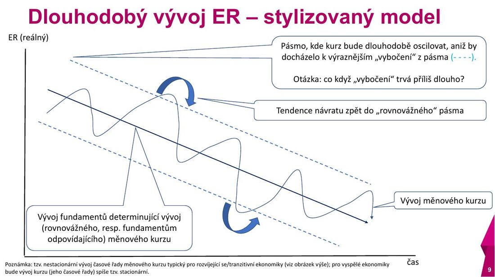
Slajd 9 (Šíma): kurz osciluje v pásmu kolem trendu, který určují fundamenty. Když z pásma dlouho „vybočuje“, existuje tendence k návratu. Nestacionární trend je typický pro rozvíjející se a tranzitivní ekonomiky, vyspělé ekonomiky jsou spíš stacionární.
Proč na tom záleží: když kurz dlouho neodpovídá fundamentům, hromadí se nerovnováha a firmy i státy za to platí. Příklad eurozóny: podle odhadů FEER (kurz odpovídající fundamentům) je euro pro Německo příliš slabé (vlastní měna by téměř ihned posílila) a pro Řecko, Portugalsko a Španělsko příliš silné (potřebovaly by slabší měnu, ztrácejí konkurenceschopnost). Irsko by potřebovalo mírně slabší kurz, Itálie je přibližně v rovnováze (s. 10–12, zdroj Saadaoui 2013). Podobně je na s. 13 u Číny tržní kurz CNY/USD od roku 2000 numericky nad rovnovážným, tedy yuan byl podhodnocený (slabší, než odpovídá fundamentům).
Jak se dělá fundamentální analýza
Tři kroky (s. 16): 1) ekonomický model (teorie kurzu), 2) formalizovaný matematický model, 3) ekonometrický model a empirické ověření. Příklad „navíc“ je model FEER/BEER pro CZK/EUR od ČNB (Komárek, Motl 2012). Rovnice na s. 25 má tvar $\ln RER_t = \beta_0 - \beta_1 \ln DPROD_t - \beta_2 NFA_t - \beta_3 \ln THFK_{t-1} - \beta_4 NX_{t-1} + u_t$ (rozdíl produktivity, čistá zahraniční aktiva, směnné relace, výkonová bilance).
Fundament (s. 17–25)
Kanál působení na kurz
Produktivita (rozdíl domácí × zahraniční)
cenový kanál: vyšší produktivita → vyšší domácí inflace → reálná apreciace; kurzový kanál: vyšší růst → vyšší poptávka po měně → nominální apreciace
Přímé zahraniční investice
příliv PZI → poptávka po domácí měně (finanční účet) a vyšší produktivita → apreciace. Dlouhodobě ale odliv zisků (negativní saldo prvotních důchodů ČR) tlačí opačně
Směnné relace (cenový index exportu / importu)
růst cen exportu (kvalita) nebo pokles cen dovážených surovin → reálná apreciace
Čistá zahraniční aktiva
lepší čistá investiční pozice → vyšší důchod → vyšší ceny neobchodovatelných statků → reálná apreciace. Záleží na struktuře: PZI × dluh
Reálný úrokový diferenciál
vyšší diferenciál → vyšší poptávka po domácích aktivech → apreciace (dočasně); podle UIP ale očekávané oslabení
Vládní výdaje
vyšší G → vyšší ceny → reálná apreciace; dlouhodobě vyšší dluh → tlak na znehodnocení
doplněk: kanál produktivity přes ceny neobchodovatelných statků se v literatuře nazývá Balassův–Samuelsonův efekt (původní práce Balassa 1964, Samuelson 1964; zdroje jsem pro tento text neotevíral); na slajdu 17 pojmenován není.
Determinanty kurzu podle časového horizontu
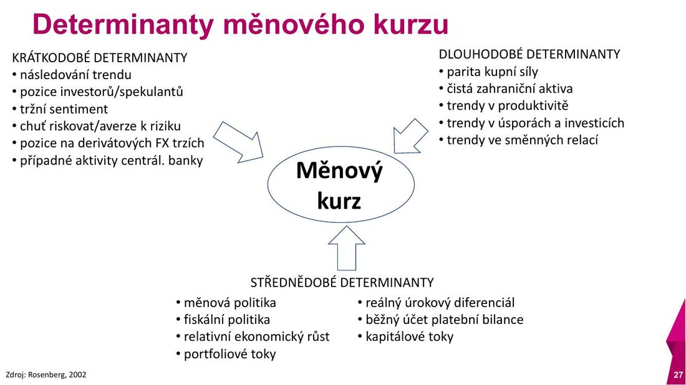
Slajd 27 (Šíma, podle Rosenberga 2002): jaké faktory působí na kurz v jakém horizontu. Co si odnést: pro prognózu na 10 let je podstatná parita kupní síly, čistá zahraniční aktiva, produktivita, úspory a investice a směnné relace. Sentiment a pozice spekulantů rozhodují jen krátkodobě.
Horizont
Faktory a příklady z přednášky (s. 28–46)
Dlouhé (10 let a více): trend kurzu
vývoj cenových hladin (Brazílie a USA), exportní výkonnost a směnné relace (ČR), zahraniční zadlužení (Singapur), míra úspor a investic (asijská krize 1997/98), demografie (stárnutí, Japonsko)
Střední (3–5 let): oscilace kurzu
saldo platební bilance (krize), světový hospodářský cyklus a ceny surovin, úroková míra a mix měnové a fiskální politiky (sjednocení Německa), očekávání výnosů na trzích (USA), cyklus averze k riziku (risk on / risk off, carry trades; JPY, CHF)
Velmi krátké (minuty, dny)
očekávání trhu a jejich naplnění (AUD po překvapivém růstu HDP 2. 12. 2015), devizové intervence (Ukrajina), technické faktory, sentiment, náhodné a politické události
Demografie: stárnutí snižuje úspory i investice, vliv na běžný účet a kurz je proto nejednoznačný a specifický pro zemi (Imam 2013, s. 34).
Sjednocení Německa: fiskální expanze a zároveň měnová restrikce (vyšší IR) → příliv kapitálu → posílení marky (s. 38–39, model IS-LM).
Singapur: růst čistých zahraničních aktiv provází apreciace SGD (s. 32). Asijské krize: před krizí vysoké deficity běžného účtu, po ní prudké oslabení měn a přebytky (s. 36).
Základní teoretické přístupy
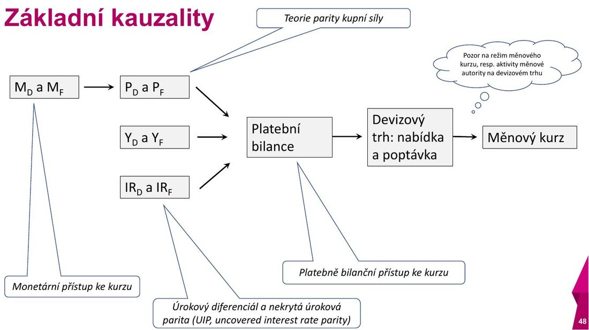
Slajd 48 (Šíma): kauzální schéma. Peněžní zásoby určují ceny (parita kupní síly), ceny, důchody a úrokové míry určují platební bilanci a ta nabídku a poptávku na devizovém trhu. Úrokový diferenciál působí na kurz přes UIP. Pozor na režim kurzu a zásahy měnové autority.
ceny (parita kupní síly absolutní a relativní, modely reálného rovnovážného kurzu),
úrokové míry (úrokový diferenciál, teorie efektivních trhů + nekrytá úroková parita, mezinárodní Fisherův efekt),
monetární přístup (flexibilní ceny, „sticky“ ceny – Dornbuschův model).
Platební bilance a měnový kurz
Platebně bilanční přístup: kladné saldo vybrané části platební bilance (výkonová bilance, běžný účet) → tendence k apreciaci domácí měny, záporné saldo → tendence k depreciaci (s. 50). Kreditní položky bilance vytvářejí nabídku deviz (= poptávku po domácí měně), debetní poptávku po devizách (s. 51).
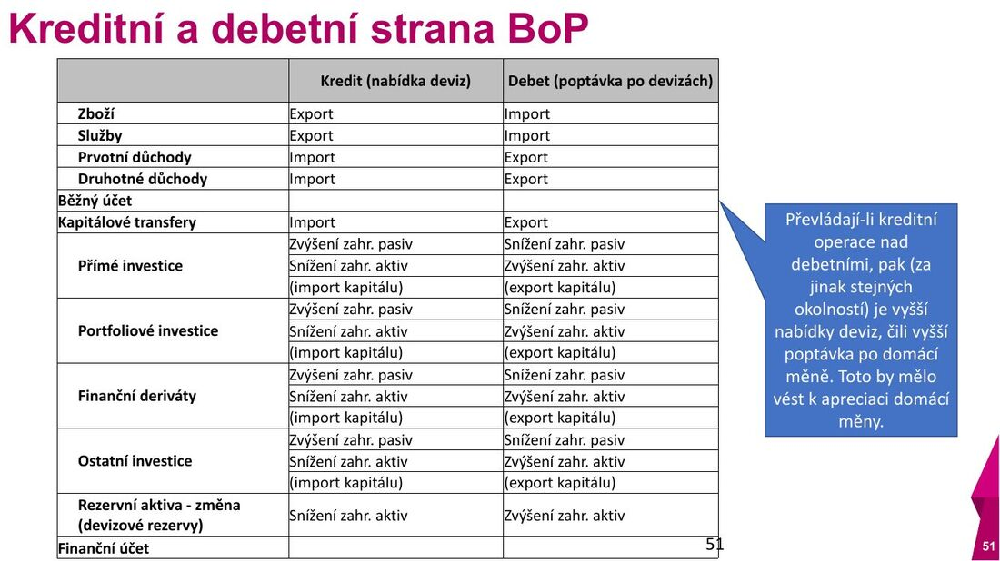
Slajd 51 (Šíma): kdo vytváří nabídku a poptávku po devizách. Export zboží a služeb je kredit (nabídka deviz), import debet. Příliv kapitálu (zvýšení zahraničních pasiv) je kredit, odliv kapitálu debet. Převažují-li kredity, domácí měna apreciuje.
Sleduje se struktura platební bilance a způsob financování deficitu: přímé zahraniční investice jsou stabilnější než krátkodobý dluhový kapitál (s. 50).
Kritické hodnoty kombinují tokový a stavový přístup: deficit běžného účtu −5 až −7 % HDP, čistá investiční pozice kolem −35 % HDP (hranice EU), hrubý zahraniční dluh −40 % HDP. Turecko je u nich často mimo limity a lira oslabovala (s. 56, údaje 2005–2015).
EU sleduje nerovnováhy procedurou MIP (Macroeconomic Imbalance Procedure, od 2011, reakce na dluhovou krizi): vnější a vnitřní nerovnováhy a trh práce, výroční zpráva v listopadu (s. 57).
⚠️ Pozor: platební bilance předpovídá dobře velké změny (měnové krize), u drobných pohybů selhává. Příliš velký přebytek (Čína) může být nerovnováha, která se bude muset napravit. Teorii nelze používat mechanicky (s. 121).
Parita kupní síly (PKS, PPP)
Myšlenka sahá k Ricardovi, jejím „otcem“ je Švéd Gustav Cassel (po 1. světové válce, jak správně stanovit kurzy). Platí pro obchodovatelné statky a stojí na zákonu jediné ceny: identické zboží stojí všude stejně, jinak vzniká arbitráž. Předpoklady: dokonalá konkurence, žádné transakční náklady a cla, stejná kvalita zboží a podobné preference (s. 59–60).
Absolutní PKS: kurz je poměr cenových hladin (spotřebních košů) obou zemí. Relativní PKS: procentní změna kurzu odpovídá rozdílu inflací.
Interpretace (s. 62): je-li domácí inflace vyšší než zahraniční, domácí měna depreciuje (kurz D/F roste), a naopak. Aproximace platí jen pro nízké inflace.
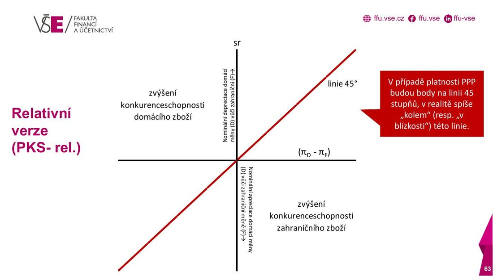
Slajd 63 (Šíma): na vodorovné ose inflační diferenciál $p_D - p_F$, na svislé změna kurzu $sr$. Při platnosti PKS leží body na linii 45°. Nad linií je domácí měna slabší, než odpovídá PKS (vyšší konkurenceschopnost domácího zboží), pod linií silnější (nižší konkurenceschopnost).
Aplikace: v eurozóně měla periferie (Řecko) vyšší inflaci než jádro (Německo), a bez možnosti oslabit kurz proto ztratila konkurenceschopnost (s. 64–65, 78).
⚠️ Kritika PKS (s. 70): nevysvětluje krátkodobé pohyby, ignoruje měnovou a fiskální politiku a intervence, existují neobchodovatelné statky (T × NT), liší se koše, kvalita a preference, existují cla a bariéry a exporty komodit mají nízkou cenovou elasticitu (růst cen ropy vede ke posílení měny exportéra). Cenová elasticita je podíl relativní změny exportovaného množství a relativní změny ceny, > 1 je elastická.
ERDI a reálný kurz
ERDI (exchange rate deviation index) je podíl tržního kurzu a kurzu podle PKS: $ERDI = SR_{tržní} / SR_{PPP}$. Vyjadřuje vliv ostatních faktorů. U tranzitivních ekonomik je $ERDI > 1$ (neobchodovatelné statky, ceny určuje domácí poptávka, arbitráž není možná) a postupně se blíží 1, u vyspělých ekonomik zhruba 1 (s. 72).
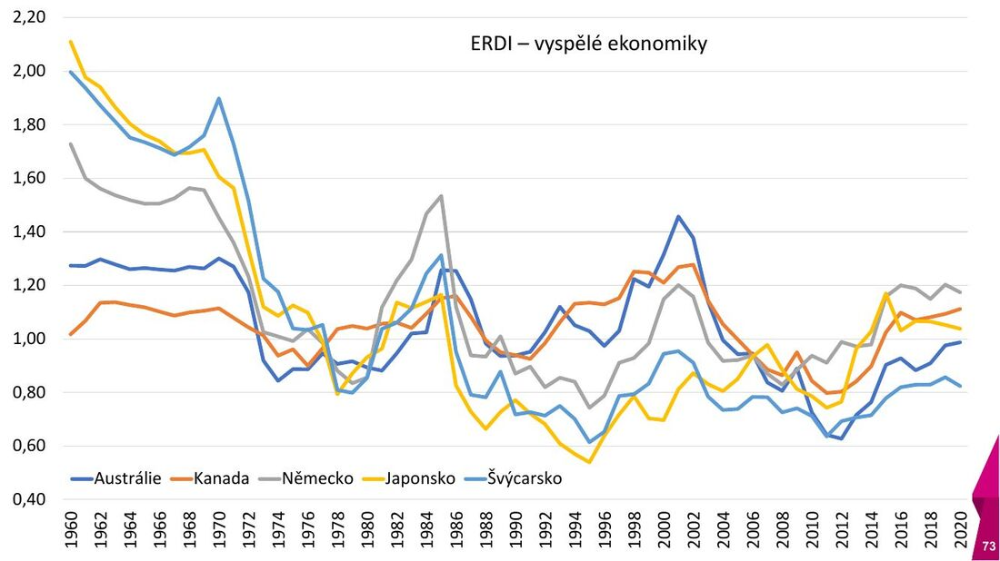
Slajd 73 (Šíma): ERDI vyspělých ekonomik (Austrálie, Kanada, Německo, Japonsko, Švýcarsko) kolísá kolem 1 s odchylkami v desítkách procent. Co si odnést: PKS platí jako dlouhodobé těžiště, ne jako rovnost každý rok.
Proč reálně apreciuje domácí měna „úspěšných“ tranzitivních ekonomik (s. 71): strukturálně vhodný růst exportu, zlepšování směnných relací, růst cen neobchodovatelných statků a dorovnání regulovaných cen (doprava, vodné, kultura).
Index reálného kurzu (bilaterální) je ukazatel reálné kupní síly a cenové konkurenceschopnosti. Platí-li PKS, je v dlouhém období přibližně 1 (resp. 100). Je to indexové číslo, ne $1\,USD = 1\,CZK$ (s. 75). REER (real effective exchange rate) je vážený geometrický průměr bilaterálních kurzů s váhami podle podílu partnerů na zahraničním obchodě, deflovaný inflací nebo mzdovými náklady; publikují ČNB, IMF, OECD.
Příklad (reálný kurz BRL/USD, 2003 → 2004): $SR_{2003} = 3{,}08$, $SR_{2004} = 2{,}93$, inflace Brazílie 6,60 %, USA 2,67 % (údaje ze s. 126, přesněji ze souboru 3,0775 a 2,9251).
$I_{RER} = \dfrac{2{,}9251}{3{,}0775}\cdot\dfrac{1{,}0267}{1{,}0660} = 0{,}9505 \cdot 0{,}9631 \approx 0{,}915$
Index je pod 1, takže BRL reálně posílil přibližně o 8,5 %: nominálně apreciovalo (kurz klesl) a navíc vyšší brazilská inflace zdražila brazilské zboží. Brazílie ztratila cenovou konkurenceschopnost. (vlastní výpočet podle vzorce ze s. 75)
⚠️ Pozor na směr: v tomto vzorci je kurz D/F (BRL za USD), pokles indexu znamená reálnou apreciaci domácí měny. Grafy REER na s. 76–78 (ČNB/IMF konvence) mají naopak numerický růst = reálná apreciace. Vždy si přečti popis osy.
Úrokové míry a měnový kurz
Teorie parity úrokové míry je podmínka rovnováhy na mezinárodním kapitálovém trhu: při volném pohybu kapitálu požaduje investor stejný očekávaný (ex ante) výnos z aktiv bez ohledu na měnu. Zanedbává se riziková prémie, omezení pohybu kapitálu, preference měn a transakční náklady (s. 81). Existují tři přístupy (s. 86): úrokový diferenciál, teorie efektivních trhů s nekrytou úrokovou paritou a mezinárodní Fisherův efekt.
Klíčový vztah: vyšší úročení měny je kompenzováno jejím očekávaným oslabením (a naopak). Podle teorie efektivních trhů se očekávání stává skutečností, takže $sr = IR_D - IR_F$ (s. 99–100).
Příklad (HUF/EUR, s. 82–85): $SR = 300$ HUF/EUR, $IR_{HUF} = 5\,\%$, $IR_{EUR} \approx 0\,\%$.
A) Maďar vloží 300 HUF doma: za rok $300 \cdot 1{,}05 = 315$ HUF (výnos 5 %).
B) Směnit 300 HUF → 1 EUR, uložit při 0 % → 1 EUR, očekávaný kurz za rok $SR^e = 315$, tedy $1 \cdot 315 = 315$ HUF (výnos 0 % + 5 % kurzová změna).
Rovnost: $300 \cdot 1{,}05 = 1{,}00 \cdot 315$, tj. oslabení HUF o 5 % přesně vyrovná úrokový diferenciál 5 p.b.
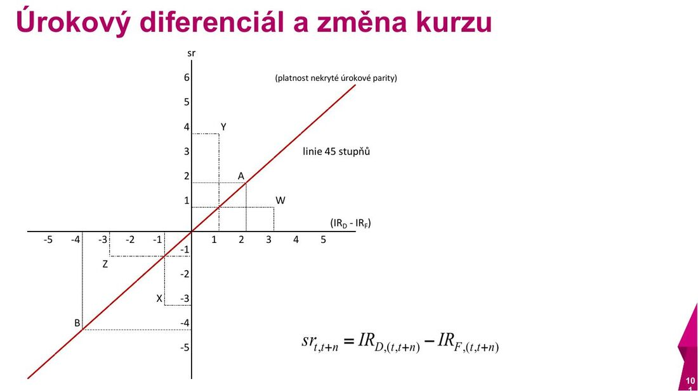
Slajd 101 (Šíma): osa x je úrokový diferenciál $IR_D - IR_F$, osa y očekávaná změna kurzu $sr$. Platí-li UIP, bod leží na linii 45°. Bod W je pod linií (změna kurzu je menší než diferenciál), bod Z nad linií (změna je větší než diferenciál). Odchylka vyvolá přesun kapitálu, který bod vrátí na linii.
Příklad (bod W, s. 102–104, koruna): $SR = 27{,}00$ CZK/EUR, $E\,SR = 27{,}27$ (očekávané oslabení CZK o 1 %), $IR_{CZK} = 4\,\%$, $IR_{EUR} = 1\,\%$ (diferenciál 3 p.b.). Investor z eurozóny:
do CZK: $27{,}00 \cdot 1{,}04 = 28{,}08$ CZK → zpět $\dfrac{28{,}08}{27{,}27} = 1{,}0297$ EUR,
do EUR: $1 \cdot 1{,}01 = 1{,}01$ EUR (český investor: $1{,}01 \cdot 27{,}27 = 27{,}54$ CZK < $28{,}08$ CZK).
Koruna vychází výhodněji ($1{,}03 > 1{,}01$), takže roste současná poptávka po CZK (↓ SR, apreciace) a očekávaná budoucí nabídka CZK (↑ $E\,SR$, depreciace). Rovnováha: změna kurzu se zvětšuje, až se rovná diferenciálu.
Příklad (bod Z, s. 105–106): $SR = 27{,}00$, $E\,SR = 26{,}73$ (očekávaná apreciace CZK o 1 %), $IR_{CZK} = 2\,\%$, $IR_{EUR} = 5\,\%$.
do CZK: $27 \cdot 1{,}02 = 27{,}54$ CZK → $\dfrac{27{,}54}{26{,}73} = 1{,}0303$ EUR,
do EUR: $1 \cdot 1{,}05 = 1{,}05$ EUR (= $1{,}05 \cdot 26{,}73 = 28{,}07$ CZK).
Výhodnější je EUR ($1{,}05 > 1{,}03$): roste poptávka po EUR (↑ SR) a očekávaná nabídka EUR (↓ $E\,SR$), až se vztah vyrovná. U dlužníků (kdo si půjčuje) platí opačná preference.
⚠️ Dvě podobná, ale opačná tvrzení:přístup přes úrokový diferenciál (s. 87) říká, že růst domácí IR vede k apreciaci domácí měny teď (příliv kapitálu zvýší nabídku deviz; předpoklad: očekávaný kurz se nemění, riziková prémie neexistuje). UIP říká, že vyšší domácí IR je spojena s očekávanou depreciací. Skutečný pohyb je nejasný, protože vyšší IR často signalizuje špatné zprávy (inflace, deficit rozpočtu nebo běžného účtu), které zhoršují očekávání (Rusko a Turecko, s. 88–89).
Riziková prémie (rP): $SR_t = E_t SR_{t+n}\cdot\dfrac{1 + IR_F}{1 + IR_D}\cdot(1 + rP)$ (s. 90). Závisí na objektivním riziku (pravděpodobnost defaultu, volatilita) a na averzi k riziku. Schématický příklad (Moody’s, Damodaran 2015, s. 91): stejný rating = stejná prémie, např. Aaa 0 %, A1 (ČR) 1,05 %, Baa3 (Turecko) 3,30 %, Caa3 15 %.
Carry trades, risk on a risk off
Carry trade: půjčka v nízko úročené měně (JPY, CHF) a investice do vysoko úročené (BRL, TRY, MXN) (s. 92).
Slajd 94 (Šíma): JPY a CHF posilují v době vysoké averze k riziku, BRL, TRY a MXN posilují v době nízké averze. Co si odnést: kurzy měn s vysokým úrokem mění směr podle globální nálady, ne jen podle domácích fundamentů.
Risk on (nízká averze): měny s vysokými sazbami posilují, měny s nízkými sazbami slábnou.
Risk off (vysoká averze): opačně, posilují „bezpečné přístavy“ (JPY, CHF).
Měření averze: VIX (implikovaná volatilita S&P 500), spread LIBOR–OIS, spready státních dluhopisů, syntetické Financial Stress Indexy (s. 92).
Obtížnost bezpečného přístavu: centrální banka Švýcarska držela od září 2011 do ledna 2015 kurzový závazek (CHF nesmí apreciovat pod 1,20 CHF/EUR), pak ho zrušila (s. 97).
Mezinárodní Fisherův efekt (MFE)
Fisherův efekt: nominální IR = reálná IR + očekávaná inflace, přesněji $1 + IR = (1 + IR_{real})(1 + E\,p)$. Reálné úrokové míry jsou v dlouhém období stabilní a v obou zemích stejné, takže pohyby nominálních sazeb určují inflační očekávání (s. 108).
MFE (s. 109–110): $IR_D - IR_F = E_t p_D - E_t p_F$. Spojením s PKS a UIP platí $E_t(sr) = E_t p_D - E_t p_F = IR_D - IR_F$. Při stejných reálných sazbách je vysoká domácí nominální sazba spojena s očekávanou (a skutečnou?) depreciací měny. MFE je syntéza PKS a UIP.
Slajd 111 (Šíma, podle Durčáková, Mandel 2007): čtyři vztahy v jednom okruhu. Očekávaná změna spotu $E(sr)$ je svázána s rozdílem očekávané inflace (PKS), s úrokovým diferenciálem (UIP) a s forwardovou prémií (termínový kurz jako nevychýlený odhad budoucího spotu). Rozdíl inflací a úrokový diferenciál spojuje Fisherův efekt.
Doplňková poznámka (s. 110): při stejných nominálních sazbách je vysoká domácí reálná sazba spojena s očekávanou apreciací.
Monetární přístup a QE
Z absolutní PKS ($SR = P_D / P_F$) a rovnice směny $M V_Y = P Y$ vychází kurz $SR_{PPP} = \dfrac{M_D V_{D,Y} / Y_D}{M_F V_{F,Y} / Y_F}$ (flexibilní ceny, s. 113). Růst peněžní zásoby doma (měnová báze $MB$ krát multiplikátor $m$) vede k oslabení měny. Takto se vysvětluje slábnutí USD při třech kolech kvantitativního uvolňování Fedu (březen 2009, listopad 2010, září 2012), nikoli však proporcionálně, protože multiplikátor $m$ silně klesl (s. 114–115). Variantou jsou „sticky“ ceny (Dornbuschův model), který přednáška jen jmenuje.
Příklad: predikce BRL/USD (Brazílie a USA, 1995–2014)
Úkol (s. 117–126 a soubor k příkladu): předpovědět směr pohybu kurzu brazilského realu vůči dolaru pro každý rok 1996–2014 čtyřmi přístupy (výkonová bilance NX, běžný účet CA, relativní PKS, UIP) a porovnat s tím, co skutečně nastalo. Důležitější než přesná hodnota je směr. „A“ = nominální apreciace BRL (kurz BRL/USD klesne), „D“ = depreciace. Makrodata se berou jako dokonalá prognóza (v roce $t-1$ známe hodnoty roku $t$). Soubor obsahuje čtyři tabulky: skutečný kurz, data Brazílie, data USA a prázdnou tabulku predikcí (4), kterou máme vyplnit (s. 125). Slajd 126 ukazuje vyplněné roky 2003–2009.
Slajd 126 (Šíma): zadání příkladu v malém. Nahoře skutečný kurz BRL/USD, pod ním NX, CA, inflace a úroková míra Brazílie a USA, dole predikce čtyř přístupů (A/D). Pro 2003–2009 dávají platební bilance „A“, PKS a UIP „D“.
Výkonová bilance (rok 2005, jsme v 2004): $4{,}08\,\% > -5{,}51\,\%$ (Brazílie vyšší než USA) → BRL by měl v roce 2005 posílit, tedy A. Brazilské NX je od roku 1999 každý rok vyšší než americké, proto je predikce A (viz tabulka níže).
Běžný účet (rok 2004, jsme v 2003): $1{,}75\,\% > -5{,}16\,\%$ → A.
Relativní PKS (rok 2009, jsme v 2008): $SR^e_{2009} = 1{,}83\cdot\dfrac{1 + 0{,}0489}{1 + (-0{,}0032)} = 1{,}83 \cdot 1{,}0523 \approx 1{,}93$ BRL/USD (s přesnějším $SR_{2008} = 1{,}8338$ vyjde 1,930). Inflace Brazílie je vyšší než USA → očekávané oslabení BRL, tedy D. Skutečný kurz 2009 byl 2,00, tedy D, trefa.
UIP (rok 2008, jsme v 2007): $SR^e_{2008} = 1{,}95\cdot\dfrac{1 + 0{,}1368}{1 + 0{,}0367} = 1{,}95 \cdot 1{,}0966 \approx 2{,}14$ → D. Skutečný kurz 2008 byl 1,83, tedy A, netrefa (období „risk on“ před krizí).
Výsledky jsem přepočítal pro všechna léta 1996–2014 z dat souboru. Pravidla: A, když $NX_{BRA} > NX_{USA}$ (resp. $CA$); u PKS A, když $p_{BRA} < p_{USA}$; u UIP A, když $IR_{BRA} < IR_{USA}$. Výsledek tabulky 4 přesně souhlasí s tabulkou v souboru i se slajdem 126:
Přístup
Predikce 1996–2014
Trefy z 19
Skutečnost
DDDDDDDD AAAAA D AA DDD (12× D, 7× A)
–
Výkonová bilance (NX)
DDD + 16× A (A od 1999)
10
Běžný účet (CA)
DDDDADAAAAAAAADADDD
14
Relativní PKS
19× D
12
UIP
19× D
12
Závěry: (1) PKS a UIP předpovídají D pokaždé, protože Brazílie měla v každém roce vyšší inflaci i vyšší úrokovou míru než USA; trefí tedy přesně tolik, kolik bylo skutečných depreciací (12 ze 19). (2) Běžný účet vyšel nejlépe (14/19), výkonová bilance nejhůř (10/19). (3) Žádná teorie sama nestačí: je třeba brát v úvahu ceny komodit, risk on / risk off, politickou stabilitu a režim kurzu (s. 125, 131).
Dlouhodobá kontrola PKS (vlastní výpočet z dat): kumulace inflačního diferenciálu $\prod \dfrac{1 + p_{BRA}}{1 + p_{USA}}$ za 1996–2014 dává faktor 2,23, a skutečný kurz vzrostl z 0,92 na 2,35, tedy 2,56násobně. Dlouhodobě tedy PKS směr i velikost trendu obstojně vystihuje (s. 138: „PPP neplatí??? Ale platí“). Za 2003–2014 ale PKS předpovídala 1,41násobek, kurz klesl z 3,08 na 2,35 (reálná apreciace BRL: komodity, carry trades).
Slajd 138 (Šíma): tržní kurz BRL/USD (tečky) a kurz podle PKS (černá čára). PKS vystihuje dlouhodobý trend růstu kurzu, tržní kurz kolem něj kolísá (vrchol 2003, přiblížení 2011). PKS nepředpovídá jednotlivé roky.Slajd 30 (Šíma): vrchol brazilské inflace (14,7 % v roce 2003) se časově shoduje s vrcholem kurzu BRL/USD (3,08, nejslabší real). Po 2003 inflace klesla a real posiloval, ale inflační diferenciál zůstal kladný.
Co ještě ovlivnilo BRL/USD
Slajd 132 (Šíma): nadbytek likvidity a nízké sazby ve vyspělých zemích → carry trades → příliv kapitálu do rozvíjejících se zemí → reálná apreciace a nižší konkurenceschopnost; růst cen komodit → možná Dutch disease (holandská nemoc) u exportérů komodit, volatilita směnných relací, silná apreciace, pokles průmyslu a větší podíl neobchodovatelného sektoru.
Kapitálové toky: příliv do Brazílie vyvolaly kvantitativní uvolňování Fedu (QE1–QE3) a carry trades; BCB reagovala kapitálovými kontrolami (s. 134).
Režim kurzu a intervence: free floating 1999–2007, řízený floating 2008–2014, měnové rezervy (s. 135).
Ceny komodit: sója, hovězí, cukr, ropa a železná ruda ovlivňují REER Brazílie (s. 136). Směnné relace Brazílie a USA (s. 137).
Krize: Brazílie 1999 (po asijské a ruské krizi, s. 36).
Shrnutí:
Fundamentální analýza odhaduje kurz z makroproměnných. V dlouhém období (10+ let) rozhodují ceny, produktivita, čistá zahraniční aktiva, úspory a investice, směnné relace a demografie, ve středním období bilance, úroky a cyklus averze k riziku, v krátkém sentiment a intervence.
Dlouhodobé odchylky od fundamentů (eurozóna, Čína) vedou k nerovnováze. Kurz se vrací do „pásma“ kolem rovnovážné úrovně.
Platební bilance: přebytek → apreciace, deficit → depreciace. Dobře předpovídá velké pohyby (krize); kritické hodnoty CA −5 až −7 % HDP, NIIP −35 %, hrubý dluh −40 % HDP.
Relativní PKS: $sr \approx p_D - p_F$, vyšší inflace → depreciace. Reálný kurz $I_{RER} = \frac{SR_{t+n}}{SR_t}\cdot\frac{1+p_F}{1+p_D}$ měří konkurenceschopnost, při platnosti PKS je ≈ 1. ERDI = tržní / PPP, u tranzitivních ekonomik > 1.
UIP: $E(sr) \approx IR_D - IR_F$, vyšší úrok = očekávané oslabení. Přístup přes úrokový diferenciál říká opak (apreciace teď). Riziková prémie a risk on / risk off tuto logiku mění.
MFE: stejné reálné sazby → $IR_D - IR_F = E p_D - E p_F$ → $E(sr)$ je dáno diferenciálem. Spojuje PKS a UIP. Monetární přístup: růst měnové zásoby (QE) oslabuje měnu.
Příklad BRL/USD 1996–2014: PKS a UIP předpovídají vždy D (12/19 správně), běžný účet 14/19, výkonová bilance 10/19. Pro směr kurzu nestačí jediná teorie.